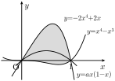

미적분Ⅰ 기말 5회 · 부교재 원문 1:1 대응과 변형 설명
왼쪽 부교재 원문, 오른쪽 견본 문항 · 빨간 번호 = 정답 · 17·18·서답형2는 구조 변경 · 2학기 중간 출처 배치: 평가원 6 · EBS 6 · Level Up 6 · 자체 2
| 번호 | 1 | 2 | 3 | 4 | 5 | 6 | 7 | 8 | 9 | 10 | 11 | 12 | 13 | 14 | 15 | 16 | 17 | 18 | 서1 | 서2 |
|---|
| 원본 | I56 | I21 | M23 | J52 | D10 | J11 | D35 | D22 | D32 | D26 | D33 | J57 | D46 | D63 | D61 | M64 | I44 | M27 | D56 | D66 |
|---|
| 출처 | 평가원 | EBS | EBS | 평가원 | EBS | EBS | Level Up | EBS | EBS | EBS | Level Up | 평가원 | Level Up | 평가원 | 평가원 | 평가원 | Level Up | Level Up | 평가원 | 평가원 |
|---|
평가원 8 · EBS 유형 7 · Level Up 5 · 학교 자체 0
익스텐션 라이브(전국 학교 기출) 대조
라이브 문항을 그대로 가져온 것은 없다(동일 문항 0). 문항별로 가장 가까운 라이브 문항과의 골격 유사도(숫자를 지운 문장 틀의 겹침)를 쟀다. 0.85 이상은 그 학교 기출과 틀이 같고 숫자만 다른 것, 0.60–0.85는 구조가 닮은 것이다. 숫자만 다른 출제는 1–16번에서 허용, 17·18·서답형2는 0.60 미만이어야 한다.
| 번호 | 원본 | 가장 가까운 라이브 | 골격 | 원문 | 판정 |
|---|
| 10번 | D26 | 단대부고 2024 11번 · 부교재 84p 26번 | 0.94 | 0.70 | 숫자만 다름 |
| 4번 | J52 | 선덕고 2024 6번 · 부교재 180p 52번 | 0.90 | 0.63 | 숫자만 다름 |
| 15번 | D61 | 반포고 2022 20번 · 부교재 98p 61번 | 0.83 | 0.75 | 구조 유사 |
| 2번 | I21 | 서현고 2023 11번 · 부교재 139p 21번 | 0.82 | 0.56 | 구조 유사 |
| 14번 | D63 | 보인고 2022 8번 · 부교재 99p 63번 | 0.71 | 0.59 | 구조 유사 |
| 3번 | M23 | 수내고 2025 7번 · 부교재 118p 38번 | 0.64 | 0.51 | 구조 유사 |
| 서답형1 | D56 | 동덕여고 2024 21번 · 부교재 120p 42번 | 0.49 | 0.46 | 다름 |
| 12번 | J57 | 가락고 2022 15번 · 부교재 182p 57번 | 0.48 | 0.17 | 다름 |
| 16번 | M64 | 배재고 2022 13번 · 부교재 129p 64번 | 0.47 | 0.40 | 다름 |
| 5번 | D10 | 배재고 2025 6번 · 부교재 80p 10번 | 0.45 | 0.39 | 다름 |
| 9번 | D32 | 경신고 2021 19번 · 부교재 117p 35번 | 0.43 | 0.33 | 다름 |
| 8번 | D22 | 인창고 2024 2번 · 부교재 150p 49번 | 0.42 | 0.26 | 다름 |
| 1번 | I56 | 구리여고 2025 11번 · 부교재 140p 27번 | 0.42 | 0.24 | 다름 |
| 13번 | D46 | 관양고 2025 15번 · 부교재 92p 46번 | 0.42 | 0.33 | 다름 |
| 서답형2 | D66 | 한영고 2023 17번 · 부교재 100p 66번 | 0.37 | 0.33 | 다름 |
| 7번 | D35 | 배재고 2023 7번 · 부교재 87p 35번 | 0.36 | 0.15 | 다름 |
| 17번 | I44 | 창덕여고 2021 3번 · 부교재 96p 57번 | 0.35 | 0.29 | 다름 |
| 11번 | D33 | 토평고 2025 7번 · 부교재 120p 42번 | 0.34 | 0.17 | 다름 |
| 6번 | J11 | 중대부고 2023 5번 · 부교재 166p 10번 | 0.29 | 0.19 | 다름 |
| 18번 | M27 | 한영고 2025 8번 · 부교재 113p 27번 | 0.24 | 0.13 | 다름 |
라이브와 틀이 같거나 닮은 문항: 10번(단대부고 2024 11번 골격 0.94), 4번(선덕고 2024 6번 골격 0.90), 15번(반포고 2022 20번 골격 0.83), 2번(서현고 2023 11번 골격 0.82), 14번(보인고 2022 8번 골격 0.71), 3번(수내고 2025 7번 골격 0.64). 모두 원문이 단순한 1–13번이라 숫자만 바꾸면 학교 기출과 겹치기 쉬운 자리다. 17·18·서답형2는 라이브와 모두 0.60 미만이다.
1번원본 I562014학년도 수능 나형 23번 · 평가원 기출
난도 하 → 하
부교재 원문
실수 \(a\)에 대하여 \(\displaystyle\int_{-a}^a(3x^2+2x)\,dx=\frac14\)일 때, \(50a\)의 값을 구하시오.
정답 25
견본 1번 · 정답 ①
\(\displaystyle\int_{-a}^{a}(3x^2+4x+11)\,dx=60\)일 때, 실수 \(a\)의 값은?
① \(2\)② \(3\)③ \(4\)④ \(5\)⑤ \(6\)
| 원본 핵심 | 대칭구간 정적분: 홀수차항 소거 |
|---|
| 변형 내용 | [숫자 변경·구하는 대상 변경] 분석집 변형의 \(3x^2+2x-7\), 우변 \(-12\), 모든 \(a\)의 곱 → \(3x^2+4x+11\), 우변 \(60\), \(a\)의 값(상수항을 양수로 두어 실근이 하나뿐인 삼차방정식, 홀수 차수 항 소거는 그대로) |
|---|
| 견본 풀이 | \(\displaystyle\int_{-a}^{a}(3x^2+4x+11)\,dx=2\int_0^{a}(3x^2+11)\,dx=2a^3+22a\)이므로 \(2a^3+22a=60\), \(a^3+11a-30=0\), \((a-2)(a^2+2a+15)=0\)이다. \(a^2+2a+15=(a+1)^2+14>0\)이므로 \(a=2\)이다. |
|---|
| 빠른 풀이 | \(2(a^3+11a)=60\)에서 \(a^3+11a=30\), \(a=2\) 대입 \(8+22=30\). 좌변은 증가하므로 \(a=2\)뿐. |
|---|
| 원본 대비 | 블라인드 측정(체감 3.0, 기준 1.3)에 따라 가볍게 고침: 세 근의 곱을 묻는 대신 실근이 하나인 삼차방정식으로 \(a\)의 값만 묻게 함(원문 I56 꼴). 홀수 차수 항 소거 판단은 그대로. 선지 내림차순 |
|---|
| 오답 설계 | ④ \(3\): 대칭 구간의 \(2\)배를 빠뜨려 \(a^3+11a=60\)으로 놓고 \(a=3\)을 구한 값 |
|---|
| 자료 대조 | 익스텐션 일반 부교재 150p 52번 변형 골격 0.52(다름) · 라이브(학교 기출) 구리여고 2025 11번 · 부교재 140p 27번 골격 0.42(다름) · 분석집 분석집 I56 변형① 골격 0.39(다름) |
|---|
2번원본 I212023년 수능특강 [23009-0133] · 유형3 정적분의 성질 · 일반
난도 하 → 하
부교재 원문
다항함수 \(f(x)\)가
\(\displaystyle \int_1^3 3f(x)\,dx+\int_1^3 (3x-1)f'(x)\,dx=0\)
을 만족시킬 때, \(\dfrac{f(3)}{f(1)}\)의 값은? (단, \(f(1)\ne0\))
① \(\dfrac14\)② \(\dfrac12\)③ \(1\)④ \(2\)⑤ \(4\)
견본 2번 · 정답 ①
일차함수 \(f(x)\)가
\(\displaystyle \int_2^4 2f(x)\,dx+\int_2^4 (3x-3)f'(x)\,dx=0\)
을 만족시킬 때, \(\dfrac{f(4)}{f(2)}\)의 값은? (단, \(f(2)\ne0\))
① \(\dfrac{1}{2}\)② \(1\)③ \(\dfrac{3}{2}\)④ \(2\)⑤ \(\dfrac{5}{2}\)
| 원본 핵심 | 3f+(3x−1)f'={(3x−1)f}' 곱의 미분 역방향 → 끝값 관계 8f(3)=2f(1) → 비 |
|---|
| 변형 내용 | [숫자 변경] 분석집 변형의 적분 구간 \([1,\,3]\), 곱해진 식 \(3x-1\), \(\dfrac{f(3)}{f(1)}\) → 적분 구간 \([2,\,4]\), 곱해진 식 \(3x-3\), \(\dfrac{f(4)}{f(2)}\) (\(f\) 앞의 계수 \(2\)가 \(3x-3\)의 도함수 \(3\)보다 \(1\) 작아 \(-\displaystyle\int f\)가 남는 관계는 그대로) |
|---|
| 견본 풀이 | \(2f(x)+(3x-3)f'(x)=3f(x)+(3x-3)f'(x)-f(x)=\{(3x-3)f(x)\}'-f(x)\)이므로 주어진 식은 \(\Big[(3x-3)f(x)\Big]_2^4-\displaystyle\int_2^4 f(x)\,dx=0\)이다. \(\Big[(3x-3)f(x)\Big]_2^4=9f(4)-3f(2)\)이고, \(f(x)\)는 일차함수이므로 \(\displaystyle\int_2^4 f(x)\,dx=\dfrac{(4-2)\{f(2)+f(4)\}}{2}=f(2)+f(4)\)이다. 따라서 \(9f(4)-3f(2)-f(2)-f(4)=0\), \(8f(4)=4f(2)\)이므로 \(\dfrac{f(4)}{f(2)}=\dfrac{1}{2}\)이다. |
|---|
| 빠른 풀이 | \(f(x)=mx+n\)으로 두면 좌변 \(=\displaystyle\int_2^4\{2mx+2n+3mx-3m\}dx=\int_2^4(5mx+2n-3m)\,dx=24m+4n\). \(n=-6m\)이므로 \(f(x)=m(x-6)\), \(\dfrac{f(4)}{f(2)}=\dfrac{-2}{-4}=\dfrac12\). |
|---|
| 원본 대비 | 분석집 변형과 같은 판단 하나(계수가 어긋난 곱의 미분 꼴, 남는 정적분을 사다리꼴 넓이로). 적분 구간·곱해진 일차식·묻는 비를 한 세트로 바꾸고, \(f\) 앞의 계수가 곱의 미분보다 \(1\) 작은 관계를 지킴 |
|---|
| 오답 설계 | ④ \(2\): \(8f(4)=4f(2)\)에서 비를 거꾸로 \(\dfrac{f(2)}{f(4)}\)로 답한 값 |
|---|
| 자료 대조 | 익스텐션 일반 부교재 139p 21번 변형 골격 0.80(구조 유사) · 라이브(학교 기출) 서현고 2023 11번 · 부교재 139p 21번 골격 0.82(구조 유사) · 분석집 분석집 I21 변형① 골격 0.96(숫자만 다름) |
|---|
3번원본 M232024년 수능특강 [24009-0110] · 유형3 속도와 가속도 · 일반
난도 하 → 하
부교재 원문
수직선 위를 움직이는 두 점 \(\mathrm{P}\), \(\mathrm{Q}\)의 시각 \(t\) \((t>0)\)에서의 위치를 각각 \(x_1\), \(x_2\)라 하면
\(\displaystyle x_1=t^3-5t^2,\quad x_2=-2t^2+10t\)
이다. 두 점 \(\mathrm{P}\), \(\mathrm{Q}\)가 만나는 순간 두 점 \(\mathrm{P}\), \(\mathrm{Q}\)의 속도를 각각 \(p\), \(q\)라 할 때, \(p-q\)의 값을 구하시오.
정답 35
견본 3번 · 정답 ②
수직선 위를 움직이는 두 점 \(\mathrm{P}\), \(\mathrm{Q}\)의 시각 \(t\) \((t>0)\)에서의 위치를 각각 \(x_1\), \(x_2\)라 하면
\(\displaystyle x_1=t^3-2t^2-2t,\quad x_2=3t^2-8t\)
이다. 두 점 \(\mathrm{P}\), \(\mathrm{Q}\)가 처음으로 만나는 시각은?
① \(1\)② \(2\)③ \(3\)④ \(4\)⑤ \(5\)
| 원본 핵심 | x₁=x₂ 양근(만나는 시각) → 두 속도 차 |
|---|
| 변형 내용 | [자체 출제] M23의 '두 점이 만나는 순간'에서 위치식을 새로 정해 \(x_1-x_2=t(t-2)(t-3)\)으로 만나는 시각이 \(t=2\), \(t=3\) 두 개가 되게 하고, 처음으로 만나는 시각만 묻게 함 |
|---|
| 견본 풀이 | 두 점 \(\mathrm{P}\), \(\mathrm{Q}\)가 만나려면 \(x_1=x_2\)이어야 하므로 \(t^3-2t^2-2t=3t^2-8t\), \(t^3-5t^2+6t=0\), \(t(t-2)(t-3)=0\)이다. \(t>0\)이므로 두 점은 \(t=2\), \(t=3\)일 때 만나고, 처음으로 만나는 시각은 \(2\)이다. |
|---|
| 빠른 풀이 | \(x_1-x_2=t(t-2)(t-3)\)의 양의 근 가운데 작은 값 \(2\). |
|---|
| 원본 대비 | 블라인드 측정(체감 3.2, 3번 자리 기준 1.3)에 따라 한 번 계산으로 줄임: 속도 차를 묻지 않고 위치가 같아지는 방정식의 양의 근 가운데 작은 값만 묻게 함. 두 번째 만남 시각이 정답 바로 뒤 선지에 옴 |
|---|
| 오답 설계 | ③ \(3\): 두 번째로 만나는 시각(\(t(t-2)(t-3)=0\)의 큰 근)을 답한 값 |
|---|
| 자료 대조 | 익스텐션 일반 부교재 118p 38번 변형 골격 0.70(구조 유사) · 라이브(학교 기출) 수내고 2025 7번 · 부교재 118p 38번 골격 0.64(구조 유사) · 분석집 분석집 J25 변형① 골격 0.34(다름) |
|---|
4번원본 J522022학년도 수능 8번 · 평가원 기출
난도 하 → 하
부교재 원문
곡선 \(y=x^2-5x\)와 직선 \(y=x\)로 둘러싸인 부분의 넓이를 직선 \(x=k\)가 이등분할 때, 상수 \(k\)의 값은?
① \(3\)② \(\dfrac{13}4\)③ \(\dfrac72\)④ \(\dfrac{15}4\)⑤ \(4\)
견본 4번 · 정답 ③
곡선 \(y=x^2-4x\)와 직선 \(y=2x\)로 둘러싸인 부분의 넓이를 직선 \(x=k\)가 이등분할 때, 상수 \(k\)의 값은?
① \(1\)② \(2\)③ \(3\)④ \(4\)⑤ \(5\)
| 원본 핵심 | 포물선과 직선 사이 넓이를 수직선 x=k가 이등분 → 차함수(높이함수)의 대칭축 = 두 교점의 중점 |
|---|
| 변형 내용 | [숫자 변경] 원문 J52의 곡선 \(y=x^2-5x\), 직선 \(y=x\) → 곡선 \(y=x^2-4x\), 직선 \(y=2x\) (두 함수의 차 \(6x-x^2\)와 이등분선 = 차의 축, 곡선의 축이 정답과 \(1\) 차이 나는 배치는 그대로). 분석집 변형의 미정계수·넓이 조건은 빼고 교점에서 바로 구하게 함 |
|---|
| 견본 풀이 | \(x^2-4x=2x\)에서 \(x(x-6)=0\)이므로 곡선과 직선의 두 교점의 \(x\)좌표는 \(0\), \(6\)이다. 둘러싸인 부분은 함수 \(y=2x-(x^2-4x)=6x-x^2\)의 그래프와 \(x\)축 사이의 부분과 넓이가 같고, 이 그래프는 직선 \(x=3\)에 대하여 대칭이므로 \(k=3\)이다. |
|---|
| 빠른 풀이 | 두 교점 \(x=0\), \(x=6\)의 중점 \(3\). |
|---|
| 원본 대비 | 블라인드 재측정(체감 4.3, 기준 1.3)에 따라 원문 J52 꼴로 되돌려 한 단계로 줄임: 교점 \(0\), \(6\)이 인수분해로 바로 보이고 중점만 구하면 됨. 곡선의 축 값이 정답 바로 앞 선지에 옴 |
|---|
| 오답 설계 | ② \(2\): 곡선 \(y=x^2-4x\)의 축 \(x=2\)를 이등분선으로 본 값(이등분선은 두 함수의 차의 축임을 놓침) |
|---|
| 자료 대조 | 익스텐션 일반 부교재 180p 52번 변형 골격 0.53(다름) · 라이브(학교 기출) 선덕고 2024 6번 · 부교재 180p 52번 골격 0.90(숫자만 다름) · 분석집 분석집 J52 원문 골격 0.73(구조 유사) |
|---|
5번원본 D102022년 수능특강 49쪽 예제 3번 · 유형2 함수의 증가와 감소 · 일반
난도 중하 → 하
부교재 원문
두 실수 \(a\), \(b\)에 대하여 함수 \(f(x)=-x^3+ax^2+bx\)가 다음 조건을 만족시킬 때, \(f(-2)\)의 최댓값은?
① \(-18\)② \(-16\)③ \(-14\)④ \(-12\)⑤ \(-10\)
견본 5번 · 정답 ④
두 실수 \(a\), \(b\)에 대하여 함수 \(f(x)=-2x^3+ax^2+bx\)가 \(x=-1\)에서 극값을 가질 때, \(f(-2)\)의 값은?
① \(10\)② \(8\)③ \(6\)④ \(4\)⑤ \(2\)
| 원본 핵심 | 증가→감소 전환점 x=0에서 f'(0)=0 → b=0, f'=x(2a-3x)의 다른 근 2a/3 ≤ -3 → a 상한 → f(-2) 최댓값 |
|---|
| 변형 내용 | [숫자 변경·조건 변경] \(f(x)=-x^3+ax^2+bx\), \((-3,\ 0)\)에서 증가, \((0,\ \infty)\)에서 감소, \(f(-2)\)의 최댓값 → \(f(x)=-2x^3+ax^2+bx\), \(x=-1\)에서 극값, \(f(-2)\)의 값 |
|---|
| 견본 풀이 | \(f'(x)=-6x^2+2ax+b\)이고 \(f(x)\)가 \(x=-1\)에서 극값을 가지므로 \(f'(-1)=-6-2a+b=0\), 즉 \(b=2a+6\)이다. 따라서 \(f(-2)=16+4a-2b=16+4a-2(2a+6)=4\)이다. (이때 \(f'(x)=-2(x+1)(3x-a-3)\)이므로 \(a\ne-6\)이면 \(x=-1\)의 좌우에서 \(f'(x)\)의 부호가 바뀌어 극값을 갖는다.) |
|---|
| 빠른 풀이 | \(f(-2)=16+4a-2b=4-2f'(-1)\)이고 \(f'(-1)=0\)이므로 \(f(-2)=4\). |
|---|
| 원본 대비 | 원문의 '미분계수 조건으로 \(a\), \(b\)의 관계를 얻어 \(f(-2)\)를 구함'은 그대로. 뼈대는 STUDY-D10-변형①의 핵심(\(f(-2)=\)(상수)\(-2f'(-1)\): 구하는 값을 한 점의 미분계수 하나로 나타내 \(a\), \(b\)를 따로 구하지 않음)이고, 수치는 최고차항 \(-1\) → \(-2\)로 바꿔 \(f(-2)=4-2f'(-1)\)(분석집 \(2-2f'(-1)\))이 되게 함. 블라인드 측정(체감 7.1 → 5.7, 기준 3.3)에서 무겁다고 나와 조건 상자 (가)(나)의 구간 증가·감소 조건을 '\(x=-1\)에서 극값'(한 점 조건, OP22)으로 바꿔 판정 하나로 줄임(조정자 지시). 최댓값 → 값(\(a\)에 관계없이 하나로 정해짐). 선지는 내림차순 |
|---|
| 오답 설계 | ① \(10\): 원문 함수(\(-x^3\))처럼 \(f'(x)=-3x^2+2ax+b\)로 미분해 \(b=2a+3\)을 대입한 값 |
|---|
| 자료 대조 | 익스텐션 일반 부교재 80p 10번 변형 골격 0.42(다름) · 라이브(학교 기출) 배재고 2025 6번 · 부교재 80p 10번 골격 0.45(다름) · 분석집 분석집 D10 원문 골격 0.42(다름) |
|---|
6번원본 J112023년 수능특강 [23009-0159] · 유형2 두 곡선 사이의 넓이 · 일반
난도 하 → 중
부교재 원문
곡선 \(y=-x^3+2x^2+3x\) 위의 점 \((1,\,4)\)에서의 접선을 \(l\)이라 할 때, 곡선 \(y=-x^3+2x^2+3x\)와 직선 \(l\)로 둘러싸인 부분의 넓이는?
① \(\dfrac1{12}\)② \(\dfrac16\)③ \(\dfrac14\)④ \(\dfrac13\)⑤ \(\dfrac5{12}\)
견본 6번 · 정답 ①
실수 \(a\)에 대하여 곡선 \(y=x^3-ax^2+x\) 위의 점 \(\mathrm{A}(1,\ 2-a)\)를 지나는 직선 \(m\)이 이 곡선 위의 점 \(\mathrm{B}\)에서 곡선에 접한다. 곡선 \(y=x^3-ax^2+x\)와 직선 \(m\)으로 둘러싸인 부분의 넓이가 \(\dfrac{1}{12}\)일 때, 모든 \(a\)의 값의 곱은? (단, 점 \(\mathrm{B}\)는 점 \(\mathrm{A}\)가 아니다.)
① \(5\)② \(6\)③ \(7\)④ \(8\)⑤ \(9\)
| 원본 핵심 | 곡선−접선 = -x(x-1)² (접점 중근) → 1/12 공식 (단순 계산) |
|---|
| 변형 내용 | [조건 변경·구하는 대상 변경·숫자 변경] 곡선 \(y=-x^3+2x^2+3x\) 위의 점 \((1,\ 4)\)에서의 접선과 곡선으로 둘러싸인 넓이 → 곡선 \(y=x^3-ax^2+x\) 위의 점 \(\mathrm{A}(1,\ 2-a)\)를 지나고 점 A가 아닌 점 B에서 접하는 직선 \(m\), 넓이 \(\dfrac{1}{12}\)일 때 모든 \(a\)의 값의 곱 |
|---|
| 견본 풀이 | \(f(x)=x^3-ax^2+x\)라 하고 점 \(\mathrm{B}\)의 \(x\)좌표를 \(\beta\)라 하자. 직선 \(m\)의 방정식을 \(y=g(x)\)라 하면 \(m\)은 점 \(\mathrm{B}\)에서 곡선에 접하고 점 \(\mathrm{A}\)를 지나므로 \(f(x)-g(x)=(x-\beta)^2(x-1)\)이다. 양변의 \(x^2\)의 계수를 비교하면 \(-a=-(2\beta+1)\)이므로 \(\beta=\dfrac{a-1}{2}\)이고, \(\beta\ne1\)에서 \(a\ne3\)이다. 곡선과 직선 \(m\)으로 둘러싸인 부분의 넓이는 \(\left|\displaystyle\int_1^{\beta}(x-\beta)^2(x-1)\,dx\right|=\dfrac{(\beta-1)^4}{12}\)이므로 \(\dfrac{(\beta-1)^4}{12}=\dfrac{1}{12}\)에서 \(|\beta-1|=1\), 즉 \(\left|\dfrac{a-3}{2}\right|=1\)이다. 따라서 \(a=1\) 또는 \(a=5\)이고, 구하는 곱은 \(1\times5=5\)이다. |
|---|
| 빠른 풀이 | 세 교점의 \(x\)좌표의 합 \(1+2\beta=a\) → \(\beta=\dfrac{a-1}{2}\). 넓이 \(\dfrac{(\beta-1)^4}{12}=\dfrac1{12}\) → \(\beta-1=\pm1\) → \(a=5,\ 1\). 곱 \(5\). |
|---|
| 원본 대비 | 원문의 '접선과 삼차곡선의 차가 \((x-\text{접점})^2(x-\text{교점})\), 넓이 \(\frac{|\text{차}|^4}{12}\)' 구조는 그대로. 뼈대는 STUDY-J11-변형①(곡선 위의 점 A를 지나고 A가 아닌 점에서 접하는 직선, 교점의 \(x\)좌표의 합으로 접점을 거꾸로 구함)이고, 곡선의 이차항 계수를 문자 \(a\)로 두고(OP28) 넓이를 주어 \(a\)를 묻는 역방향(OP33, J11 학교식_예상 2)을 얹음. 넓이는 원문 값 \(\frac1{12}\)으로 두어 접점과 A의 거리 1이 되게 함(분석집 \(\frac{27}{4}\)과 다름). 분담표 장치 J11 조작_보강 1(접선 → 두 점을 지나는 직선)과 LIVE2-04-027(\(y\)축 경계)은 '다른 점에서 접함' 뼈대와 겹치면 접선이 사라지거나 둘러싸인 부분이 둘로 나뉘어 쓰지 않음. '(단, 점 B는 점 A가 아니다.)'는 A를 접점으로 하는 직선(\(a=2,\ 4\))을 빼는 데 꼭 필요해 새로 붙인 단서 |
|---|
| 오답 설계 | ④ \(8\): 점 \(\mathrm{A}\)를 접점으로 보아 다른 교점의 \(x\)좌표를 \(a-2\)로 두고 \(|a-3|=1\)에서 \(a=2,\ 4\)의 곱을 구한 값 |
|---|
| 자료 대조 | 익스텐션 일반 부교재 166p 10번 변형 골격 0.24(다름) · 라이브(학교 기출) 중대부고 2023 5번 · 부교재 166p 10번 골격 0.29(다름) · 분석집 분석집 J10 원문 골격 0.25(다름) |
|---|
7번원본 D352023년 수능특강 [23009-0097] · Level Up
난도 중하 → 중
부교재 원문
최고차항의 계수가 \(1\)인 삼차함수 \(f(x)\)가 다음 조건을 만족시킨다.
(가)함수 \(f(x)\)의 극솟값은 \(-2\)이다.
(나)열린구간 \((a,\,b)\)에서 \(af(x_2)\)이다.
\(a\)의 최솟값이 \(-1\), \(b\)의 최댓값이 \(3\)일 때, 함수 \(f(x)\)의 극댓값은?
① \(22\)② \(24\)③ \(26\)④ \(28\)⑤ \(30\)
견본 7번 · 정답 ⑤
삼차함수 \(f(x)\)에 대하여 함수 \(f(x)-2x\)의 극댓값은 \(6\), 극솟값은 \(-10\)이다. 열린구간 \((a,\ b)\)에서 \(a
① \(-8\)② \(-7\)③ \(-6\)④ \(-5\)⑤ \(-4\)| 원본 핵심 | ‘(a,b)에서 감소’의 최대 범위 = 두 극점 → f'=3(x+1)(x−3), 극값 차 (β−α)³/2 로 극댓값 |
|---|
| 변형 내용 | [조건 변경·숫자 변경·구하는 대상 변경] 최고차항의 계수가 1, 극솟값 \(-2\), \((a,\ b)\)에서 \(f(x_1)>f(x_2)\), \(a\)의 최솟값 \(-1\), \(b\)의 최댓값 \(3\), 극댓값 → 삼차함수(계수 모름), \(f(x)-2x\)의 극댓값 \(6\)·극솟값 \(-10\), \((a,\ b)\)에서 \(f(x_2)-f(x_1)<2(x_2-x_1)\), \(a\)의 최솟값 \(-3\), \(b\)의 최댓값 \(1\), \(f'(-1)\)(상자 → 문장 조건) |
|---|
| 견본 풀이 | \(g(x)=f(x)-2x\)라 하면 \(a0)\)이라 하면 \(g'(x)=3p(x+3)(x-1)\)이고 \(g(-3)-g(1)=-\displaystyle\int_{-3}^{1}3p(x+3)(x-1)\,dx=\dfrac{p\times4^3}{2}=32p\)이다. \(g(-3)-g(1)=6-(-10)=16\)이므로 \(p=\dfrac12\)이다. 따라서 \(f'(x)=g'(x)+2=\dfrac32(x+3)(x-1)+2\)이고 \(f'(-1)=\dfrac32\times2\times(-2)+2=-4\)이다. |
|---|
| 빠른 풀이 | \(g=f-2x\)가 \((-3,\ 1)\)에서 감소 → \(g'=3p(x+3)(x-1)\). 극값의 차 \(\dfrac{p\cdot4^3}{2}=16\) → \(p=\dfrac12\). \(f'(-1)=g'(-1)+2=-6+2=-4\). |
|---|
| 원본 대비 | 원문의 '감소하는 최대 구간의 양 끝이 두 극점, 극값의 차 \(\frac{|p|(\beta-\alpha)^3}{2}\)' 구조는 그대로. 뼈대는 STUDY-D35-변형①(최고차항의 계수를 모르고 극댓값·극솟값을 모두 주어 극값의 차로 계수를 정한 뒤 가운데 점의 미분계수)이고, 수치는 \(10,\ -6,\ (-1,\ 3),\ f'(1)\) → \(6,\ -10,\ (-3,\ 1),\ f'(-1)\)로 한 세트로 바꿈(극점 사이 거리 4, 극값의 차 16 유지). 그 위에 D35 조작_보강 1(OP12·OP11: 감소 조건을 '함숫값의 차 < 기울기 × 간격'으로 감싸 기준을 기울기 2인 직선으로)을 얹고, 극값도 같은 \(f(x)-2x\)의 극값으로 주어 \(g=f-2x\)로 바꾸면 분석집 문항과 같은 구조가 되게 함. 조작_보강 스케치(최고차항의 계수 1, 기울기 \(-15\), 답 106)보다 가벼움. 분담표의 다른 장치 GEN1-01-059(점프 조각함수와 실근 유일)는 5–8번 무게를 넘어 쓰지 않음. 상자 ×라 (가)(나)를 문장 조건으로 씀 |
|---|
| 오답 설계 | ③ \(-6\): \(g'(-1)=-6\)을 구하고 \(f'(x)=g'(x)+2\)의 \(2\)를 더하지 않은 값 · ① \(-8\): \(f'(x)=g'(x)-2\)로 부호를 바꿔 쓴 값 |
|---|
| 자료 대조 | 익스텐션 일반 부교재 87p 35번 변형 골격 0.33(다름) · 라이브(학교 기출) 배재고 2023 7번 · 부교재 87p 35번 골격 0.36(다름) · 분석집 분석집 D35 변형① 골격 0.42(다름) |
|---|
8번원본 D222023년 수능완성 [23054-0137] · 유형3 함수의 극대와 극소 · 일반
난도 중 → 중
부교재 원문
최고차항의 계수가 \(1\)인 사차함수 \(f(x)\)가 다음 조건을 만족시킨다.
(가)함수 \(f(x)\)는 \(x=3\)에서 극댓값 \(0\)을 갖는다.
(나)방정식 \(f(x)=0\)의 세 실근을 작은 것부터 차례로 나열하면 등차수열을 이룬다.
함수 \(f(x)\)의 극솟값이 \(-16\)일 때, \(f(0)\)의 값은?
① \(1\)② \(3\)③ \(5\)④ \(7\)⑤ \(9\)
견본 8번 · 정답 ③
최고차항의 계수가 \(1\)인 사차함수 \(f(x)\)에 대하여 곡선 \(y=f(x)\)와 직선 \(y=x-3\)이 서로 다른 두 점에서 접하고, 두 점 중 한 점의 \(x\)좌표는 \(2\)이다. 함수 \(f(x)-x\)가 \(x=0\)에서 극대일 때, \(f(1)\)의 값은?
① \(5\)② \(6\)③ \(7\)④ \(8\)⑤ \(9\)
| 원본 핵심 | 극댓값 0인 중근 x=3 + 세 근 등차 → f=(x-3)²{(x-3)²-d²}, u=(x-3)² 치환 극솟값 -d⁴/4 → d² |
|---|
| 변형 내용 | [조건 변경·숫자 변경·구하는 대상 변경] (가) \(x=3\)에서 극댓값 \(0\), (나) 세 실근이 등차수열, 극솟값 \(-16\), \(f(0)\) → 곡선 \(y=f(x)\)와 직선 \(y=x-3\)이 서로 다른 두 점에서 접하고 한 접점의 \(x\)좌표는 \(2\), \(f(x)-x\)가 \(x=0\)에서 극대, \(f(1)\)(상자 → 문장 조건) |
|---|
| 견본 풀이 | \(g(x)=f(x)-x\)라 하자. 곡선 \(y=f(x)\)와 직선 \(y=x-3\)이 서로 다른 두 점에서 접하고 한 접점의 \(x\)좌표가 \(2\)이므로 다른 접점의 \(x\)좌표를 \(\alpha\ (\alpha\ne2)\)라 하면 \(f(x)-(x-3)=(x-\alpha)^2(x-2)^2\), 즉 \(g(x)=(x-\alpha)^2(x-2)^2-3\)이다. \(g'(x)=2(x-\alpha)(x-2)(2x-\alpha-2)\)이므로 \(g(x)\)는 \(x=\alpha\), \(x=2\)에서 극소, \(x=\dfrac{\alpha+2}{2}\)에서 극대이다. \(\dfrac{\alpha+2}{2}=0\)에서 \(\alpha=-2\)이므로 \(f(x)=(x+2)^2(x-2)^2+x-3=(x^2-4)^2+x-3\)이고 \(f(1)=9+1-3=7\)이다. |
|---|
| 빠른 풀이 | \(f(x)-x+3=(x-\alpha)^2(x-2)^2\)의 극대점은 두 접점의 가운데 → \(\dfrac{\alpha+2}2=0\), \(\alpha=-2\). \(f(1)=(1-4)^2+1-3=7\). |
|---|
| 원본 대비 | 원문의 '극대점이 대칭축인 사차함수, 대칭축과 근의 위치로 식 결정' 구조는 그대로. 뼈대는 STUDY-D22-변형①(두 극솟값이 같으면 \(f-m=(x-\alpha)^2(x-\beta)^2\), 극대점이 대칭축)이고, 그 위에 D22 조작_보강 1(OP12: 기준을 \(x\)축에서 직선으로)을 얹어 '두 극솟값이 서로 같고 그 값이 \(m\)'을 '곡선과 직선 \(y=x-3\)이 서로 다른 두 점에서 접한다'로 감쌈(OP11). 블라인드 측정(체감 5.7 → 6.0, 기준 4.0)에서 무겁다고 나와 극댓값으로 폭을 구하는 단계를 빼고 한 접점의 \(x\)좌표 \(2\)를 직접 줌(OP22, 미지수 하나). 수치는 \(x=0\) 대칭, 접점 \(\pm2\), \(f(1)\). 작년(2024 기말 9번)은 숫자만 바꿨으므로 조건 표현을 바꾸는 축을 씀. 분담표의 다른 장치 GEN1-01-030은 함께 쓸 수 없어 쓰지 않음. 상자 ×라 문장 조건으로 씀 |
|---|
| 오답 설계 | ② \(6\): \(g(1)=(1-4)^2-3=6\)을 구하고 \(x\)를 더하지 않은 값 |
|---|
| 자료 대조 | 익스텐션 일반 부교재 96p 57번 변형 골격 0.40(다름) · 라이브(학교 기출) 인창고 2024 2번 · 부교재 150p 49번 골격 0.42(다름) · 분석집 분석집 I22 변형② 골격 0.33(다름) |
|---|
9번원본 D322025년 수능완성 [25054-0155] · 유형4 함수의 그래프 · 일반
난도 중상 → 중상
부교재 원문
실수 \(t\)에 대하여 닫힌구간 \([t,\,t+1]\)에서 함수
\(\displaystyle f(x)=\begin{cases}-x(x+2) & (x<0)\\ x(x-2) & (x\ge0)\end{cases}\)
의 최댓값을 \(g(t)\)라 하자. 함수 \(g(t)\)가 \(t=\alpha\)에서 미분가능하지 않을 때, \(g(\alpha)\)의 값은?
① \(-\dfrac12\)② \(-\dfrac7{12}\)③ \(-\dfrac23\)④ \(-\dfrac34\)⑤ \(-\dfrac56\)
견본 9번 · 정답 ②
실수 \(t\)에 대하여 닫힌구간 \([t,\,t+1]\)에서 함수
\(\displaystyle f(x)=\begin{cases}x(x+a) & (x<0)\\ x(x-a) & (x\ge0)\end{cases}\)
의 정적분 \(\displaystyle\int_t^{t+1}f(x)\,dx\)의 값을 \(g(t)\)라 하자. 함수 \(g(t)\)가 \(t=\dfrac32\)에서 극소이고 \(t=\alpha\)에서 극대일 때, \(g(\alpha)-g\left(\dfrac32\right)\)의 값은? (단, \(a\)는 상수이다.)
① \(2\)② \(3\)③ \(4\)④ \(5\)⑤ \(6\)
| 원본 핵심 | 움직이는 구간 [t,t+1]의 최댓값 g(t): 내부 극대 포함/양 끝값 비교로 분할, 두 끝값이 같아지며 최댓값 위치가 바뀌는 점에서 꺾임 |
|---|
| 변형 내용 | [함수 교체] 닫힌구간 \([t,\ t+1]\)에서의 최댓값 → \(\displaystyle\int_t^{t+1}f(x)\,dx\)(DB 예상밖 1), 원점 대칭 \(f\) → \(y\)축 대칭 \(f\)(조작_보강 1: \(x<0\) 조각의 부호를 뒤집음) · [조건 변경] 상수 \(2\) → 문자 \(a\), '\(t=\dfrac32\)에서 극소'로 \(a=4\)를 역산 · [구하는 대상 변경] 미분가능하지 않은 \(t=\alpha\)에서의 \(g(\alpha)\) → 극대인 \(t=\alpha\)에서의 \(g(\alpha)\)와 극솟값 \(g\left(\dfrac32\right)\)의 차 |
|---|
| 견본 풀이 | \(g'(t)=f(t+1)-f(t)\)이다.
(ⅰ) \(t\ge0\)일 때 \(g'(t)=(t+1)(t+1-a)-t(t-a)=2t+1-a\)
(ⅱ) \(t\le-1\)일 때 \(g'(t)=(t+1)(t+1+a)-t(t+a)=2t+1+a\)
(ⅲ) \(-1\(t=\dfrac32\)에서 극소이므로 \(g'\left(\dfrac32\right)=4-a=0\), \(a=4\)이다. 이때 \(g'(t)\)의 부호는 \(t=-\dfrac52\)에서 음에서 양으로, \(t=-\dfrac12\)에서 양에서 음으로, \(t=\dfrac32\)에서 음에서 양으로 바뀌므로 \(g(t)\)는 \(t=-\dfrac52,\ \dfrac32\)에서 극소, \(t=-\dfrac12\)에서 극대이다.
극댓값: \(g\left(-\dfrac12\right)=\displaystyle\int_{-\frac12}^{\frac12}(x^2-4|x|)\,dx=2\int_0^{\frac12}(x^2-4x)\,dx=2\left(\dfrac1{24}-\dfrac12\right)=-\dfrac{11}{12}\)
극솟값: \(g\left(\dfrac32\right)=\displaystyle\int_{\frac32}^{\frac52}(x^2-4x)\,dx=\int_{\frac32}^{\frac52}\{(x-2)^2-4\}\,dx=\dfrac1{12}-4=-\dfrac{47}{12}\)이고, \(f\)의 그래프가 \(y\)축에 대하여 대칭이므로 \(g\left(-\dfrac52\right)=g\left(\dfrac32\right)\)이다.
따라서 \(\alpha=-\dfrac12\)이고 \(g(\alpha)-g\left(\dfrac32\right)=-\dfrac{11}{12}-\left(-\dfrac{47}{12}\right)=3\) |
|---|
| 빠른 풀이 | \(g'(t)=f(t+1)-f(t)=0\)은 두 끝값이 같은 \(t\): 구간 가운데가 \(0\)(\(t=-\dfrac12\)) 또는 꼭짓점 \(\pm\dfrac a2\). \(\dfrac a2-\dfrac12=\dfrac32\)에서 \(a=4\). 극댓값 \(g\left(-\dfrac12\right)=\dfrac1{12}-\dfrac a4\), 극솟값 \(\dfrac1{12}-\dfrac{a^2}4\), 차 \(\dfrac{a^2-a}4=3\). |
|---|
| 원본 대비 | 뼈대는 DB 예상밖 1(구간 최댓값 \(g(t)\)를 구간 정적분으로 바꾸어 \(g'(t)=f(t+1)-f(t)\), 원문의 '두 끝값이 같은 \(t\)'가 극값 조건으로 다시 나옴)이고, 조작_보강 1의 '기함수 → 우함수'를 겹쳤다. 원문 함수 그대로면 극댓값과 극솟값이 부호만 다르고(합 \(0\)) 극점이 둘이지만, 우함수로 바꾸면 극점이 셋(극소 둘, 극대 하나)이 되고 가운데 극대가 두 조각에 걸친 구간 \([-\dfrac12,\ \dfrac12]\)에서 나온다. 상수 \(2\)를 \(a\)로 두고 극소 위치 \(t=\dfrac32\)로 \(a=4\)를 정하게 했다. 발문은 원문의 '실수 \(t\)에 대하여 닫힌구간 \([t,\ t+1]\)에서 함수 …', '\(t=\alpha\)에서 …일 때, \(g(\alpha)\)'를 살렸다. 원문처럼 구간의 두 끝이 어느 조각에 있는지로 경우를 나누어 끝값을 비교하는 풀이는 그대로 쓰인다. 단서 '(단, \(a\)는 상수이다.)'는 \(a\)를 소개하려고 붙였다. |
|---|
| 오답 설계 | ③ \(4\): \(g(\alpha)\)를 구할 때 \(x<0\) 조각을 무시하고 \(\displaystyle\int_{-\frac12}^{\frac12}(x^2-4x)\,dx=\dfrac1{12}\)로 계산(구간 가운데 함숫값 \(f(0)=0\), \(f(2)=-4\)로 어림해도 \(4\)) · ④ \(5\): \(y\)축 대칭이라 \(2\displaystyle\int_0^{\frac12}\)로 바꾸면서 \(x<0\) 조각 \(x(x+4)\)를 넣어 \(g(\alpha)\)를 \(\dfrac{13}{12}\)로 계산 |
|---|
| 자료 대조 | 익스텐션 일반 부교재 85p 32번 변형 골격 0.44(다름) · 라이브(학교 기출) 경신고 2021 19번 · 부교재 117p 35번 골격 0.43(다름) · 분석집 분석집 M35 변형① 골격 0.42(다름) |
|---|
10번원본 D262024년 수능완성 [24054-0127] · 유형4 함수의 그래프 · 일반
난도 중 → 중
부교재 원문
함수 \(f(x)=3x^4-4x^3-12x^2+k\)에 대하여 함수 \(y=f(x)\)의 그래프와 \(x\)축이 서로 다른 세 점 \(\mathrm{A}(a,\,0)\), \(\mathrm{B}(b,\,0)\), \(\mathrm{C}(c,\,0)\) \((a
① \(242\)② \(244\)③ \(246\)④ \(248\)⑤ \(250\)견본 10번 · 정답 ④
함수 \(f(x)=3x^4-8x^3-18x^2+k\)에 대하여 함수 \(y=f(x)\)의 그래프와 직선 \(y=7\)이 서로 다른 세 점 \(\mathrm{A}(a,\,7)\), \(\mathrm{B}(b,\,7)\), \(\mathrm{C}(c,\,7)\) \((a
① \(-3\)② \(-4\)③ \(-5\)④ \(-6\)⑤ \(-7\)| 원본 핵심 | 사차함수 x축과 세 점 ⇔ 한 극값=0(접점) 케이스 분석(k=0은 abc=0, k=32는 한 점) → k=5, 접점 인수 제거 후 근과 계수 |
|---|
| 변형 내용 | [조건 변경·숫자 변경·구하는 대상 변경] \(f(x)=3x^4-4x^3-12x^2+k\) → \(3x^4-8x^3-18x^2+k\)(극값 위치 \(-1,\ 0,\ 3\)), \(x\)축과 세 점 \(\mathrm{A}(a,\,0)\), … → 직선 \(y=7\)과 세 점 \(\mathrm{A}(a,\,7)\), …(기준선 이동), 구하는 값 \(f\left(\dfrac{k}{abc}\right)\) → \(\dfrac{k}{abc}\)(LIVE1-01-052), 선지 내림차순 |
|---|
| 견본 풀이 | \(f'(x)=12x^3-24x^2-36x=12x(x+1)(x-3)\)이므로 \(f(x)\)는 \(x=-1\)에서 극솟값 \(k-7\), \(x=0\)에서 극댓값 \(k\), \(x=3\)에서 극솟값 \(k-135\)를 갖는다. 함수 \(y=f(x)\)의 그래프와 직선 \(y=7\)이 서로 다른 세 점에서만 만나려면 직선 \(y=7\)이 그래프에 접해야 하므로 극값 중 하나가 \(7\)이다.
(ⅰ) \(k-135=7\)이면 \(7\)이 \(f(x)\)의 최솟값이므로 만나는 점은 하나이다.
(ⅱ) \(k=7\)이면 \(f(x)-7=x^2(3x^2-8x-18)\)이므로 세 점에서 만나지만 그중 하나의 \(x\)좌표가 \(0\)이라 \(abc=0\)이다.
(ⅲ) \(k-7=7\), 즉 \(k=14\)이면 \(f(x)-7=3x^4-8x^3-18x^2+7=(x+1)^2(3x^2-14x+7)\)이다. 방정식 \(3x^2-14x+7=0\)은 서로 다른 두 양의 실근을 가지므로 세 점에서 만나고, 두 근의 곱이 \(\dfrac73\)이므로 \(abc=-1\times\dfrac73=-\dfrac73<0\)이다.
따라서 \(k=14\)이고 \(\dfrac{k}{abc}=14\times\left(-\dfrac37\right)=-6\)이다. |
|---|
| 빠른 풀이 | 극값 \(k-7\), \(k\), \(k-135\) 중 \(abc<0\)이면 \(k-7=7\), \(k=14\). \(f(x)-7\)의 네 근(중근 \(-1\) 포함)의 곱 \(\dfrac{k-7}3=abc\times(-1)\)에서 \(abc=-\dfrac73\), \(\dfrac{k}{abc}=-6\). |
|---|
| 원본 대비 | DB 후보_순위 2(LIVE1-01-052: \(\dfrac{k}{abc}\)를 묻기)를 뼈대로, GEN1-01-042의 장치(기준을 \(x\)축에서 수평선으로)를 얹어 직선 \(y=7\)과의 교점으로 바꿨다(OP12). 그래서 상수항이 \(k-7\)이 되어 LIVE의 지름길 \(\dfrac{k}{abc}=3r\)(중근 \(r\))이 그대로는 통하지 않는다(분석집_저격 1의 판단). 극값 위치 \(-1,\ 0,\ 3\)은 원문처럼 \(x=0\)이 극점이라 \(abc<0\)이 두 후보 중 하나를 지우는 일을 그대로 한다(숨은 관계 보존, OP02). 원문 발문·단서 문장은 그대로 두고 식·기준선·묻는 값만 바꿨다. 선지는 \(\dfrac{k}{abc}\)가 음수라 원문 답 꼴 그대로 내림차순 |
|---|
| 오답 설계 | ① \(-3\): 네 근의 곱을 쓸 때 \(f(x)-7\)의 상수항 \(k-7\) 대신 \(k\)를 그대로 써서 \(k=3\times abc\times(-1)\)로 둔 값(\(x\)축 기준 원문·LIVE의 지름길 \(\dfrac{k}{abc}=3r\)) |
|---|
| 자료 대조 | 익스텐션 일반 부교재 84p 26번 변형 골격 0.82(구조 유사) · 라이브(학교 기출) 단대부고 2024 11번 · 부교재 84p 26번 골격 0.94(숫자만 다름) · 분석집 분석집 D26 원문 골격 0.69(구조 유사) |
|---|
11번원본 D332023년 수능특강 [23009-0090] · Level Up
난도 중하 → 중
부교재 원문
곡선 \(y=|x|(x+1)\)에 접하고 기울기가 \(3\)인 서로 다른 두 직선 사이의 거리는?
① \(\dfrac{\sqrt6}2\)② \(\dfrac{\sqrt7}2\)③ \(\sqrt2\)④ \(\dfrac32\)⑤ \(\dfrac{\sqrt{10}}2\)
견본 11번 · 정답 ③
곡선 \(y=|x|(x+2)\)와 직선 \(y=4x+k\)가 서로 다른 두 점에서만 만나도록 하는 음수 \(k\)의 값은?
① \(-3\)② \(-2\)③ \(-1\)④ \(0\)⑤ \(1\)
| 원본 핵심 | y=|x|(x+1) 구간별 미분 = 3인 접점 각각 → 평행 두 직선 거리 |
|---|
| 변형 내용 | [구하는 대상 변경·숫자 변경] 곡선 \(y=|x|(x+1)\)에 접하고 기울기가 \(3\)인 두 직선 사이의 거리 → 곡선 \(y=|x|(x+2)\)와 직선 \(y=4x+k\)가 서로 다른 두 점에서만 만나도록 하는 음수 \(k\)(\(x\ge0\) 쪽 접선 하나) |
|---|
| 견본 풀이 | \(k<0\)이면 \(x<0\)에서 \(-x^2-2x=4x+k\), 즉 \(x^2+6x+k=0\)은 두 근의 곱이 \(k<0\)이므로 음의 실근을 하나만 갖는다. 따라서 \(x\ge0\)에서 \(x^2+2x=4x+k\), 즉 \(x^2-2x-k=0\)이 음이 아닌 실근을 하나만 가져야 한다. \(k<0\)이면 두 근의 합 \(2\), 곱 \(-k>0\)이므로 실근이 있으면 둘 다 양수이고, 하나가 되려면 중근이어야 한다. 판별식 \(4+4k=0\)에서 \(k=-1\)이다(직선 \(y=4x-1\)이 곡선 \(y=x^2+2x\)에 점 \((1,\ 3)\)에서 접함). 이때 교점은 \(x=1\)과 \(x=-3-\sqrt{10}\)의 두 점이다. |
|---|
| 빠른 풀이 | \(x\ge0\) 조각 \(y=x^2+2x\)에서 \(y'=4\)이면 \(x=1\), 접선 \(y=4x-1\) → \(k=-1\)(\(x<0\) 쪽 교점은 늘 하나). |
|---|
| 원본 대비 | DB v3_추가 1(두 접선 사이에 끼인 직선의 교점)을 문항으로 완성했다. 수치는 LIVE1-01-062(재현고)의 곡선 \(|x|(x+2)\)과 기울기 \(4\)로 바꿨다. 블라인드 측정(체감 5.4, 5.8)에 따라 경계 하나만 따지게 했다: 단서 '음수'는 다른 접선 \(k=9\)를 지우는 데 꼭 필요하다(없으면 \(k=-1\), \(9\) 두 값). 원문처럼 조각에서 기울기 \(4\)인 접선을 구하면 바로 끝난다. 겹칠 장치 칸이 비어 있어 장치를 더 얹지 않았다. 계수 조작은 넣지 않았다(○) |
|---|
| 오답 설계 | ④ \(0\): 직선이 꺾인 점 \((0,\ 0)\)을 지날 때 두 점에서 만난다고 본 값(실제로는 \(x=-6,\ 0,\ 2\)의 세 점) |
|---|
| 자료 대조 | 익스텐션 일반 부교재 115p 32번 변형 골격 0.26(다름) · 라이브(학교 기출) 토평고 2025 7번 · 부교재 120p 42번 골격 0.34(다름) · 분석집 분석집 M63 원문 골격 0.22(다름) |
|---|
12번원본 J572010학년도 수능 9월 모의평가 가형 7번 · 평가원 기출
난도 중하 → 중상
부교재 원문
두 곡선 \(y=x^4-x^3\), \(y=-x^4+x\)로 둘러싸인 도형의 넓이가 곡선 \(y=ax(1-x)\)에 의하여 이등분될 때, 상수 \(a\)의 값은? (단, \(0

① \(\dfrac14\)② \(\dfrac38\)③ \(\dfrac58\)④ \(\dfrac34\)⑤ \(\dfrac78\)
견본 12번 · 정답 ④
두 곡선 \(y=x^4-x^3\), \(y=-2x^4+2x\)로 둘러싸인 부분이 곡선 \(y=ax(1-x)\)에 의하여 나누어지는 두 부분의 넓이의 비가 \(1:2\)일 때, 상수 \(a\)의 값은? (단, \(0

① \(\dfrac25\)② \(\dfrac35\)③ \(\dfrac45\)④ \(1\)⑤ \(\dfrac65\)
| 원본 핵심 | 두 곡선 영역(교점 0,1)을 같은 교점 지나는 곡선 ax(1-x)가 이등분 → 위 곡선과 이등분 곡선 사이 ∫ = 전체/2, a 일차식 |
|---|
| 변형 내용 | [조건 변경] 이등분 → 넓이의 비 \(1:2\)(학교식_예상 2, 어느 쪽이 \(1\)인지는 단서 범위로 판정) · [숫자 변경] 위 곡선 \(y=-x^4+x\) → \(y=-2x^4+2x\)(교점 \(0,\ 1\)과 '세 곡선이 같은 두 점을 지남'은 그대로), 단서 \(0 |
|---|
| 견본 풀이 | \(0\le x\le1\)에서 \(-2x^4+2x-ax(1-x)=x(1-x)(2x^2+2x+2-a)\ge0\), \(ax(1-x)-(x^4-x^3)=x(1-x)(x^2+a)\ge0\)이므로 곡선 \(y=ax(1-x)\)는 두 곡선 사이에 있다.
위쪽 부분의 넓이: \(\displaystyle\int_0^1\{-2x^4+2x-ax(1-x)\}\,dx=-\dfrac25+1-\dfrac a6=\dfrac35-\dfrac a6\)
아래쪽 부분의 넓이: \(\displaystyle\int_0^1\{ax(1-x)-x^4+x^3\}\,dx=\dfrac a6-\dfrac15+\dfrac14=\dfrac a6+\dfrac1{20}\)
전체 넓이는 \(\dfrac35+\dfrac1{20}=\dfrac{13}{20}\)이다.
(아래쪽):(위쪽)\(=2:1\)이면 \(\dfrac a6+\dfrac1{20}=\dfrac23\times\dfrac{13}{20}\)에서 \(a=\dfrac{23}{10}\)이 되어 \(0(아래쪽):(위쪽)\(=1:2\)이면 \(\dfrac a6+\dfrac1{20}=\dfrac13\times\dfrac{13}{20}=\dfrac{13}{60}\)에서 \(\dfrac a6=\dfrac16\)
따라서 \(a=1\) |
|---|
| 빠른 풀이 | 아래쪽 \(=\dfrac a6+\dfrac1{20}\)(\(x\)축 아래 고정 부분 \(\dfrac1{20}\) + 포물선 \(\dfrac a6\)), 전체 \(\dfrac{13}{20}\). \(0 |
|---|
| 원본 대비 | 뼈대는 DB 후보_순위 3(학교식_예상 2: 원문 곡선 유지, 이등분 → \(1:2\))이고, 원문 곡선 그대로면 답이 \(\dfrac25\)라 위 곡선의 계수를 \(2\)배로 바꾸어 답을 정수 \(1\)로 만들었다(교점 \(0,\ 1\)과 이등분 곡선이 같은 두 점을 지나는 원문 장치는 그대로, OP02). LIVE2-04-151의 '\(x\)축 아래 고정 부분'은 아래 곡선이 \(x\)축 아래에 만드는 \(\dfrac1{20}\)으로, LIVE2-04-154의 '이등분 곡선은 포물선 넓이 공식'은 \(\dfrac a6\)으로 들어 있다. 비 \(1:2\)는 어느 쪽이 작은지 말하지 않아 두 경우를 따져야 하고, \(2:1\)쪽 해 \(\dfrac{23}{10}\)은 단서로 버린다. 단서: 원문 '(단, \(0 |
|---|
| 오답 설계 | ⑤ \(\dfrac65\): 아래 곡선이 \(x\)축 아래에 만드는 부분(\(\dfrac1{20}\))을 빼먹고 아래쪽 넓이를 \(\dfrac a6\)로 두어 \(2\times\dfrac a6=\dfrac35-\dfrac a6\) · ① \(\dfrac25\): 위 곡선을 원문의 \(y=-x^4+x\)로 계산(위쪽 \(\dfrac3{10}-\dfrac a6\))하여 \(2\left(\dfrac a6+\dfrac1{20}\right)=\dfrac3{10}-\dfrac a6\) |
|---|
| 자료 대조 | 익스텐션 일반 부교재 182p 57번 변형 골격 0.61(구조 유사) · 라이브(학교 기출) 가락고 2022 15번 · 부교재 182p 57번 골격 0.48(다름) · 분석집 분석집 J17 변형① 골격 0.32(다름) |
|---|
13번원본 D462025년 수능특강 [25009-0101] · Level Up
난도 중 → 중상
부교재 원문
최고차항의 계수가 \(1\)이고 \(f(0)=0\)인 이차함수 \(f(x)\)에 대하여 함수 \(g(x)=(x^2-2x)f(x)\)가 다음 조건을 만족시킬 때, 함수 \(g(x)\)의 극솟값은?
(가)집합 \(\{x\,|\,g(x)=0\}\)의 원소의 개수는 \(2\)이다.
(나)함수 \(g(x)\)는 극댓값을 갖지 않는다.
① \(-\dfrac94\)② \(-\dfrac{27}{16}\)③ \(-\dfrac98\)④ \(-\dfrac9{16}\)⑤ \(0\)
견본 13번 · 정답 ②
최고차항의 계수가 양수이고 \(f(0)=0\)인 이차함수 \(f(x)\)에 대하여 함수 \(g(x)=(x^2-2x)f(x)\)가 다음 조건을 만족시킬 때, 곡선 \(y=g(x)\) 위의 점 \((1,\ g(1))\)에서의 접선과 \(x\)축, \(y\)축으로 둘러싸인 부분의 넓이는?
(가)집합 \(\{x\,|\,g(x)=0\}\)의 원소의 개수는 \(2\)이다.
(나)함수 \(g(x)\)의 극솟값은 \(-27\)이다.
① \(2\)② \(4\)③ \(6\)④ \(8\)⑤ \(10\)
| 원본 핵심 | g=x²(x−2)(x+p): 영점 2개 ⇒ p∈{0,−2}, 극댓값 없음 ⇒ 삼중근형 x³(x−2) 선택 |
|---|
| 변형 내용 | [소재 결합] D60의 '곱 꼴 \(g\) 위의 점에서의 접선으로 둘러싸인 넓이'를 같은 곱 꼴 \(g(x)=(x^2-2x)f(x)\)에 옮김(접선 하나와 두 축) · [조건 변경] 최고차항의 계수 \(1\) → 양수(미정), (나) '극댓값을 갖지 않는다' → '극솟값은 \(-27\)'(후보 가르기와 계수 결정을 한 조건으로) · [구하는 대상 변경] 극솟값 → 넓이 |
|---|
| 견본 풀이 | \(f(0)=0\)이므로 \(f(x)=kx(x+p)\ (k>0)\)으로 놓으면 \(g(x)=kx^2(x-2)(x+p)\)이다.
(가)에서 \(g(x)=0\)의 서로 다른 실근이 \(0,\ 2\)뿐이므로 \(p=0\) 또는 \(p=-2\)이다.
\(p=-2\)이면 \(g(x)=kx^2(x-2)^2\ge0\)이고 극솟값은 \(g(0)=g(2)=0\)이므로 (나)를 만족시키지 않는다.
\(p=0\)이면 \(g(x)=kx^3(x-2)\), \(g'(x)=2kx^2(2x-3)\)이므로 \(g(x)\)는 \(x=\dfrac32\)에서만 극소이고 극솟값은 \(g\left(\dfrac32\right)=k\times\dfrac{27}8\times\left(-\dfrac12\right)=-\dfrac{27}{16}k\)이다. (나)에서 \(-\dfrac{27}{16}k=-27\), \(k=16\)이다.
\(g(x)=16(x^4-2x^3)\)에서 \(g(1)=-16\), \(g'(1)=16\times(4-6)=-32\)이므로 접선은 \(y=-32(x-1)-16=-32x+16\)이다.
이 접선의 \(x\)절편은 \(\dfrac12\), \(y\)절편은 \(16\)이므로 구하는 넓이는 \(\dfrac12\times\dfrac12\times16=4\) |
|---|
| 빠른 풀이 | (가)로 \(g=kx^3(x-2)\) 또는 \(kx^2(x-2)^2\). 뒤의 것은 극솟값 \(0\)이라 버림. \(-\dfrac{27}{16}k=-27\)에서 \(k=16\). 접선 \(y=-32x+16\), 넓이 \(\dfrac12\times\dfrac12\times16=4\). |
|---|
| 원본 대비 | 뼈대는 DB 결합 1(D60의 '곱 꼴 \(g\) 위의 점에서의 접선으로 둘러싸인 넓이'를 같은 곱 꼴 \(g\)에 이식)이고, D46 예상밖 1의 '최고차항의 계수를 미지수로'를 겹쳤다. 원문 (나) '극댓값을 갖지 않는다'를 그대로 두면 (나)만으로 \(p=0\)이 정해져 (가)가 군더더기가 되므로(DB v3_추가 1), (나)를 '극솟값은 \(-27\)'로 바꾸어 (가)의 두 후보 가르기(\(p=-2\)이면 극솟값 \(0\))와 계수 결정을 한 조건에 맡겼다. 블라인드 측정(체감 7.2 → 6.5) 뒤 두 번 가볍게 했다: 조건을 3개에서 2개로 줄이고 삼중근 접점 해석 조건을 지웠으며, 접선 두 개와 \(y\)축의 삼각형을 접선 하나와 두 축의 삼각형으로 바꾸고 계수가 정수 \(k=16\)이 되게 했다. '최고차항의 계수가 양수'는 \(p=-2\), \(k<0\) 후보(극솟값 \(g(1)=k\))를 처음부터 막는 함수 소개 문구다(그 후보는 접선이 \(x\)축과 평행해 넓이가 생기지 않음). 정답 번호는 분담표 목표 ③과 달리 ②이다. |
|---|
| 오답 설계 | ④ \(8\): 삼각형 넓이에서 \(\dfrac12\)을 빠뜨려 \(\dfrac12\times16\) · ① \(2\): 극솟값을 \(g\left(\dfrac32\right)=k\times\dfrac{27}8\times(-1)\)로 잘못 계산해 \(k=8\), 접선 \(y=-16x+8\)에서 넓이 \(\dfrac12\times\dfrac12\times8\) |
|---|
| 자료 대조 | 익스텐션 일반 부교재 92p 46번 변형 골격 0.51(다름) · 라이브(학교 기출) 관양고 2025 15번 · 부교재 92p 46번 골격 0.42(다름) · 분석집 분석집 I76 변형② 골격 0.26(다름) |
|---|
14번원본 D632022학년도 수능 10번 · 평가원 기출
난도 중하 → 중
부교재 원문
삼차함수 \(f(x)\)에 대하여 곡선 \(y=f(x)\) 위의 점 \((0,\ 0)\)에서의 접선과 곡선 \(y=xf(x)\) 위의 점 \((1,\ 2)\)에서의 접선이 일치할 때, \(f'(2)\)의 값은?
① \(-18\)② \(-17\)③ \(-16\)④ \(-15\)⑤ \(-14\)
견본 14번 · 정답 ②
삼차함수 \(f(x)\)에 대하여 곡선 \(y=f(x)\) 위의 점 \((0,\ 0)\)에서의 접선과 곡선 \(y=(x-2)f(x)-1\) 위의 점 \((1,\ -3)\)에서의 접선이 일치할 때, \(f(-1)\)의 값은?
① \(11\)② \(12\)③ \(13\)④ \(14\)⑤ \(15\)
| 원본 핵심 | y=f의 (0,0) 접선 = y=xf의 (1,2) 접선 → 공통접선 y=2x → f'(0)=2, f(1)=2, f(1)+f'(1)=2 ⇒ f'(1)=0 |
|---|
| 변형 내용 | [함수 교체·숫자 변경·구하는 대상 변경] 곡선 \(y=xf(x)\) 위의 점 \((1,\ 2)\) → 곡선 \(y=(x-2)f(x)-1\) 위의 점 \((1,\ -3)\)(곱하는 인수 \(x\)를 \(x-2\)로, LIVE1-01-128의 상수항), 구하는 값 \(f'(2)\) → \(f(-1)\) |
|---|
| 견본 풀이 | 곡선 \(y=f(x)\)가 원점을 지나므로 \(f(0)=0\)이고, 원점에서의 접선은 \(y=f'(0)x\)이다. \(g(x)=(x-2)f(x)-1\)이라 하자. 점 \((1,\ -3)\)이 곡선 \(y=g(x)\) 위에 있으므로 \(g(1)=-f(1)-1=-3\), 즉 \(f(1)=2\)이다. 두 접선이 일치하므로 이 접선은 두 점 \((0,\ 0)\), \((1,\ -3)\)을 지나고, 기울기는 \(-3\)이다. 따라서 \(f'(0)=-3\), \(g'(1)=-3\)이다. \(g'(x)=f(x)+(x-2)f'(x)\)이므로 \(g'(1)=f(1)-f'(1)=2-f'(1)=-3\)에서 \(f'(1)=5\)이다. \(f(0)=0\), \(f'(0)=-3\)이므로 \(f(x)=ax^3+bx^2-3x\) (\(a\ne0\))라 하면 \(f(1)=a+b-3=2\), \(f'(1)=3a+2b-3=5\)이다. 두 식을 연립하면 \(a=-2\), \(b=7\)이므로 \(f(x)=-2x^3+7x^2-3x\)이고, \(f(-1)=2+7+3=12\)이다. |
|---|
| 빠른 풀이 | 접선 \(y=-3x\). \(g(1)=-f(1)-1=-3\)에서 \(f(1)=2\), \(g'(1)=f(1)-f'(1)=-3\)에서 \(f'(1)=5\). \(f=ax^3+bx^2-3x\): \(a+b=5\), \(3a+2b=8\) → \(a=-2\), \(b=7\), \(f(-1)=12\). |
|---|
| 원본 대비 | DB 후보_순위 2(LIVE1-01-128: 곡선에 상수항을 붙여 높이에만 남게)를 뼈대로, 곱하는 인수 \(x\)를 \(x-2\)로 옮겼다(GEN1-01-129처럼 곡선 꼴을 바꾸는 장치, 인자 평행이동 OP12). \(x=1\)에서 인수 \(x-2\)가 \(-1\)이라 높이식은 \(-f(1)-1\), 기울기식은 \(f(1)-f'(1)\)로 부호가 뒤집혀(OP04) 원문에서 외운 \(f'(1)=0\)도, LIVE의 \(f(1)+f'(1)\)도 그대로 쓰면 틀린다. 인수 부호를 놓쳐 \(f(1)+f'(1)\)로 쓰면 최고차항의 계수가 \(0\)이 되어 '삼차함수'와 어긋나므로 다시 보게 된다. 원문 발문 문장은 그대로이고 곡선 식·점·묻는 값만 바꿨다 |
|---|
| 오답 설계 | ⑤ \(15\): 미분하면 사라지는 상수 \(-1\)을 접점의 높이에서도 빠뜨려 \(-f(1)=-3\), 즉 \(f(1)=3\)으로 두고 \(f'(1)=6\)으로 계산한 값(\(a=-3\), \(b=9\), \(f(-1)=15\)) |
|---|
| 자료 대조 | 익스텐션 일반 부교재 99p 63번 변형 골격 0.73(구조 유사) · 라이브(학교 기출) 보인고 2022 8번 · 부교재 99p 63번 골격 0.71(구조 유사) · 분석집 분석집 M40 원문 골격 0.42(다름) |
|---|
15번원본 D612016학년도 수능 9월 모의평가 A형 21번 · 평가원 기출
난도 중상 → 중
부교재 원문
실수 \(t\)에 대하여 직선 \(x=t\)가 두 함수
\(\displaystyle y=x^4-4x^3+10x-30,\quad y=2x+2\)
의 그래프와 만나는 점을 각각 \(\mathrm{A}\), \(\mathrm{B}\)라 할 때, 점 \(\mathrm{A}\)와 점 \(\mathrm{B}\) 사이의 거리를 \(f(t)\)라 하자.
\(\displaystyle \lim_{h\to0+}\frac{f(t+h)-f(t)}{h}\times\lim_{h\to0-}\frac{f(t+h)-f(t)}{h}\le0\)
을 만족시키는 모든 실수 \(t\)의 값의 합은?
① \(-7\)② \(-3\)③ \(1\)④ \(5\)⑤ \(9\)
견본 15번 · 정답 ⑤
실수 \(t\)에 대하여 직선 \(x=t\)가 두 함수
\(\displaystyle y=x^4-5x^2+10x-30,\quad y=16x-28\)
의 그래프와 만나는 점을 각각 \(\mathrm{A}\), \(\mathrm{B}\)라 할 때, 점 \(\mathrm{A}\)와 점 \(\mathrm{B}\) 사이의 거리를 \(f(t)\)라 하자.
\(\displaystyle \lim_{h\to0+}\frac{f(t+h)-f(t)}{h}\times\lim_{h\to0-}\frac{f(t+h)-f(t)}{h}\le0\)
을 만족시키는 실수 \(t\)의 개수는?
① \(1\)② \(2\)③ \(3\)④ \(4\)⑤ \(5\)
| 원본 핵심 | f(t)=|P(t)| (P=두 그래프 차); 좌·우미분계수 곱≤0 ⇔ P(t)=0(꺾인 점, 곱=−P'^2) 또는 P'(t)=0 → 후보 모두 합 |
|---|
| 변형 내용 | [숫자 변경·구하는 대상 변경] 두 함수 \(y=x^4-4x^3+10x-30\), \(y=2x+2\)(차가 \((t+2)(t-4)(t^2-2t+4)\)) → \(y=x^4-5x^2+10x-30\), \(y=16x-28\)(차가 \((t+1)^2(t^2-2t-2)\), 중근 숨김), 모든 \(t\)의 값의 합 → \(t\)의 개수 |
|---|
| 견본 풀이 | \(P(t)=(t^4-5t^2+10t-30)-(16t-28)=t^4-5t^2-6t-2\)라 하면 \(f(t)=|P(t)|\)이다. \(P(-1)=1-5+6-2=0\)이고 \(P(t)=(t+1)^2(t^2-2t-2)\)이다. \(P'(t)=4t^3-10t-6=2(t+1)(2t^2-2t-3)\)이다.
\(P(t)\ne0\)이면 \(f(t)\)는 \(x=t\)에서 미분가능하므로 주어진 식의 값은 \(\{f'(t)\}^2=\{P'(t)\}^2\)이고, \(\{P'(t)\}^2\le0\)이려면 \(P'(t)=0\)이다. \(P(t)=0\)이면 \(f(t)=0\)이므로 주어진 식의 값은 \(|P'(t)|\times(-|P'(t)|)=-\{P'(t)\}^2\le0\)이 되어 항상 성립한다.
따라서 조건을 만족시키는 \(t\)는 \(P(t)=0\) 또는 \(P'(t)=0\)인 실수이다. \(P(t)=0\)에서 \(t=-1\), \(t=1\pm\sqrt3\)이고, \(P'(t)=0\)에서 \(t=-1\), \(t=\dfrac{1\pm\sqrt7}2\)이다. \(t=-1\)은 두 방정식의 공통인 근이므로 한 번만 세고, \(1\pm\sqrt3\)과 \(\dfrac{1\pm\sqrt7}2\)은 서로 다르므로 구하는 \(t\)의 개수는 \(1+2+2=5\)이다. |
|---|
| 빠른 풀이 | \(P=t^4-5t^2-6t-2=(t+1)^2(t^2-2t-2)\), \(P'=2(t+1)(2t^2-2t-3)\). 조건 ⇔ \(P=0\) 또는 \(P'=0\): \(\{-1,\ 1\pm\sqrt3\}\cup\left\{-1,\ \dfrac{1\pm\sqrt7}2\right\}\), \(5\)개. |
|---|
| 원본 대비 | DB 후보_순위 3(학교식_예상 2: 원문 틀에서 구하는 값을 개수로, OP35)을 뼈대로, GEN1-01-122의 장치(두 함수의 차가 중근을 가져 \(P=0\)과 \(P'=0\)이 공통근)를 얹었다. 중근 인수 \((t+1)^2\)은 전개해 숨겼다(OP12, 2025 기말 11의 반복 인수 숨기기). 원문은 두 집합이 겹치지 않아 \(2+3\)이었지만, 여기서는 공통근 \(-1\)을 한 번만 세야 한다(두 번 세면 \(6\), 선지 밖). 사차함수 \(x^4-5x^2+10x-30\)은 원문의 \(10x-30\)을 남기고 바꿨고, 원문처럼 \(P'=0\)의 두 근은 무리수이다. 발문·극한식 문장은 원문 그대로 |
|---|
| 오답 설계 | ③ \(3\): 주어진 식을 \(\{f'(t)\}^2\le0\)으로만 보고 \(P'(t)=0\)인 \(t\)만 센 값(\(P(t)=0\)인 꺾인 점 \(1\pm\sqrt3\)을 빠뜨림) · ② \(2\): 그래프가 꺾이는 점(\(P(t)=0\)이고 부호가 바뀌는 \(1\pm\sqrt3\))만 센 값 |
|---|
| 자료 대조 | 익스텐션 일반 부교재 98p 61번 변형 골격 0.81(구조 유사) · 라이브(학교 기출) 반포고 2022 20번 · 부교재 98p 61번 골격 0.83(구조 유사) · 분석집 분석집 D61 변형① 골격 0.88(숫자만 다름) |
|---|
16번원본 M642021학년도 수능 6월 모의평가 나형 30번 · 평가원 기출
난도 상 → 상
부교재 원문
이차함수 \(f(x)\)는 \(x=-1\)에서 극대이고, 삼차함수 \(g(x)\)는 이차항의 계수가 \(0\)이다. 함수
\(\displaystyle h(x)=\begin{cases}f(x) & (x\le0)\\ g(x) & (x>0)\end{cases}\)
이 실수 전체의 집합에서 미분가능하고 다음 조건을 만족시킬 때, \(h'(-3)+h'(4)\)의 값을 구하시오.
(가)방정식 \(h(x)=h(0)\)의 모든 실근의 합은 \(1\)이다.
(나)닫힌구간 \([-2,\,3]\)에서 함수 \(h(x)\)의 최댓값과 최솟값의 차는 \(3+4\sqrt3\)이다.
정답 38
견본 16번 · 정답 ⑤
이차함수 \(f(x)\)는 모든 실수 \(x\)에 대하여 \(f(x)\le f(-1)\)이고, 삼차함수 \(g(x)\)는 모든 실수 \(x\)에 대하여 \(g(-x)+g(x)=2g(0)\)이다. 함수
\(\displaystyle h(x)=\begin{cases}f(x) & (x\le0)\\ g(x) & (x>0)\end{cases}\)
이 실수 전체의 집합에서 미분가능하고 다음 조건을 만족시킬 때, \(h'(6)\)의 값은?
(가)방정식 \(h'(x)h'(x-4)=0\)의 서로 다른 실근의 개수는 \(3\)이다.
(나)닫힌구간 \([-3,\,3]\)에서 함수 \(h(x)\)의 최댓값과 최솟값의 차는 \(10\)이다.
① \(16\)② \(15\)③ \(14\)④ \(13\)⑤ \(12\)
| 원본 핵심 | x=0 미분가능 접합(상수·일차항 공유) + 이차함수 대칭축으로 h(x)=h(0)의 음근 확정 → 근의 합으로 삼차 양근 → 계수비, 구간 최대·최소 차로 크기 결정(C 소거) |
|---|
| 변형 내용 | [소재 결합] (가) '방정식 \(h(x)=h(0)\)의 모든 실근의 합은 \(1\)' → M66의 '방정식 \(h'(x)h'(x-4)=0\)의 서로 다른 실근의 개수는 \(3\)'(DB 결합 1) · [조건 변경] '\(x=-1\)에서 극대' → '\(f(x)\le f(-1)\)', '이차항의 계수가 \(0\)' → '\(g(-x)+g(x)=2g(0)\)'(같은 정보를 다른 꼴로), (나) 구간 \([-2,\ 3]\) → \([-3,\ 3]\), 차 \(3+4\sqrt3\) → \(10\) · [구하는 대상 변경] \(h'(-3)+h'(4)\) → \(h'(6)\) · [형식 변경] 단답 → 5지선다 |
|---|
| 견본 풀이 | \(f(x)\le f(-1)\)이므로 \(f(x)=A(x+1)^2+q\ (A<0)\)이다. \(g(-x)+g(x)=2g(0)\)에서 \(g(x)\)의 이차항의 계수는 \(0\)이므로 \(g(x)=Bx^3+Cx+D\)로 놓는다. \(h(x)\)가 \(x=0\)에서 미분가능하므로 \(D=f(0)\), \(C=f'(0)=2A\)이다. \(h(0)=c\)라 하면 \(f(x)=Ax^2+2Ax+c\), \(g(x)=Bx^3+2Ax+c\)이다.
\(h'(x)=0\)의 실근은 \(x\le0\)에서 \(x=-1\)뿐이고, \(x>0\)에서는 \(3Bx^2+2A=0\)의 양수인 근이다. \(B\le0\)이면 \(x>0\)에서 \(h'(x)<0\)이므로 \(h'(x)h'(x-4)=0\)의 실근은 \(-1,\ 3\)의 \(2\)개뿐이다. 따라서 \(B>0\)이고 \(3Bx^2+2A=0\)의 양수인 근을 \(s\)라 하면 \(h'(x)h'(x-4)=0\)의 실근은 \(-1,\ s,\ 3,\ s+4\)이다. (가)에서 이 중 두 개가 같아야 하고 \(s>0\)이므로 \(s=3\), 즉 \(27B=-2A\)이다.
이때 \(g'(x)=3B(x^2-9)\)이므로 \(0닫힌구간 \([-3,\ 3]\)에서 \(f(-1)=c-A\), \(f(-3)=c+3A\), \(f(0)=c\), \(g(3)=27B+6A+c=c+4A\)이고 \(A<0\)이므로 최댓값은 \(c-A\), 최솟값은 \(c+4A\)이다.
(나)에서 \(-5A=10\), \(A=-2\)이고 \(B=\dfrac4{27}\)이다.
따라서 \(h'(6)=g'(6)=3\times\dfrac4{27}\times36-4=12\) |
|---|
| 빠른 풀이 | 미분가능 → \(g(x)=Bx^3+2Ax+c\). (가): \(h'\)의 영점 \(\{-1,\ s\}\)와 \(\{3,\ s+4\}\)가 하나 겹쳐 \(s=3\), \(B=-\dfrac{2A}{27}\). \(g\)가 \((0,\ 3]\)에서 감소, \(g(3)=c+4A |
|---|
| 원본 대비 | DB 결합 1(M66의 '\(h'(x)h'(x-4)=0\)의 서로 다른 실근의 개수 \(3\)'으로 원문 (가)를 바꿈: \(g\)의 극소점이 \(x=3\))을 뼈대로, GEN1-02-169처럼 '\(x=-1\)에서 극대'를 부등식 \(f(x)\le f(-1)\)로, 학교식_예상 2처럼 '이차항의 계수가 \(0\)'을 \(g(-x)+g(x)=2g(0)\)으로 감쌌다. 원문의 핵심(\(x=0\) 접합으로 두 조각이 상수항·일차항을 공유, 상수 \(c\) 소거, 닫힌구간 최대·최소의 차로 크기 결정)은 그대로다. 원문은 최솟값이 \(g\)의 구간 안 극솟값이었는데, 변형은 \(g\)의 극소점이 구간의 오른쪽 끝 \(3\)과 겹치고 왼쪽 끝을 \(-3\)으로 옮겨 \(f(-3)\)과 \(g(3)\) 중 어느 쪽이 최솟값인지 판정하게 했다(양정고 2022·2023 기말의 구간 이동). 결합 1 스케치의 답 \(\dfrac{50}3\)(구간 \([-2,\ 3]\), 차 \(15\))은 분수라 차를 \(10\), 구하는 값을 \(h'(6)\)으로 바꾸어 정수 \(12\)로 했다. GEN1-02-166의 '좌우 미분계수 곱'은 원문의 '실수 전체에서 미분가능'과 부딪쳐 쓰지 않았다. 선지는 내림차순이다. |
|---|
| 오답 설계 | ② \(15\): 원문처럼 끝값 쪽을 보지 않고 최솟값을 \(x\le0\) 조각의 끝값 \(f(-3)=c+3A\)로 두어 \(-4A=10\), \(A=-\dfrac52\), \(h'(6)=-6A=15\) · ① \(16\): \(g'(x)=3Bx^2+2A\)에서 \(2A\)를 빠뜨려 \(h'(6)=3\times\dfrac4{27}\times36=16\) |
|---|
| 자료 대조 | 익스텐션 일반 부교재 129p 64번 변형 골격 0.45(다름) · 라이브(학교 기출) 배재고 2022 13번 · 부교재 129p 64번 골격 0.47(다름) · 분석집 분석집 M64 변형② 골격 0.57(다름) |
|---|
17번원본 I442022년 수능특강 [22009-0158] · Level Up
난도 중상 → 상
부교재 원문
최고차항의 계수가 \(1\)인 삼차함수 \(f(x)\)가 있다. 실수 \(t\)에 대하여 함수 \(|f(x)-t|\)가 미분가능하지 않은 점의 개수를 \(g(t)\)라 할 때, 두 함수 \(f(x)\)와 \(g(t)\)가 다음 조건을 만족시킨다.
(가)\(f'(-1)=0\)
(나)모든 실수 \(a\)에 대하여
\(\displaystyle\int_1^{-a}f'(x)\,dx+\int_1^{a+2}f'(x)\,dx=0\)
이다.
(다)함수 \(g(t)\)는 \(t=0\)과 \(t=p\)에서만 불연속이다.
(단, \(p\)는 양수이다.)
\(\displaystyle\int_{-1}^1 f(x)\,dx\)의 값은?
① \(40\)② \(44\)③ \(48\)④ \(52\)⑤ \(56\)
견본 17번 · 정답 ③
최고차항의 계수가 \(1\)인 삼차함수 \(f(x)\)가 있다. 실수 \(m\)에 대하여 곡선 \(y=|f(x)-x-m|\)과 직선 \(y=t\)가 만나는 점의 개수를 \(h(t)\)라 하자. 함수 \(f(x)\)가 다음 조건을 만족시킬 때, \(\displaystyle\int_{-1}^{3}f(x)\,dx\)의 값은?
(가)곡선 \(y=f(x)\) 위의 두 점 \((-1,\ f(-1))\), \((3,\ f(3))\)에서의 접선의 기울기는 모두 \(1\)이다.
(나)함수 \(h(t)\)가 \(t=k\)에서 불연속인 실수 \(k\)의 개수가 \(2\)가 되도록 하는 모든 실수 \(m\)의 값의 합은 \(3\)이다.
① \(4\)② \(6\)③ \(8\)④ \(10\)⑤ \(12\)
| 원본 핵심 | 적분조건 (나)를 f(-a)+f(a+2)=2f(1)로 바꿔 변곡점 대칭 → 극점 위치, |f(x)-t| 미분불가능점 개수 g(t)의 불연속점=극값 높이 → 상수 결정 |
|---|
| 변형 내용 | [구조 변경] 설정 교체(②형): \(|f(x)-t|\)가 미분가능하지 않은 점의 개수 \(g(t)\) → 곡선 \(y=|f(x)-x-m|\)과 직선 \(y=t\)의 교점 개수 \(h(t)\)(기준선 \(y=x+m\)) · [조건 변경] \(f'(-1)=0\)과 적분 점대칭 조건 → 두 점에서의 접선의 기울기가 모두 \(1\) · [구하는 대상 변경] 불연속점 \(\{0,\ p\}\) → 불연속점이 \(2\)개가 되는 \(m\)의 값의 합 \(3\) · 묻는 값 \(\int_{-1}^{1}f\) → \(\int_{-1}^{3}f\)(점대칭 중심을 가운데로) |
|---|
| 견본 풀이 | \(F(x)=f(x)-x\)라 하면 \(F(x)\)는 최고차항의 계수가 \(1\)인 삼차함수이고, (가)에서 \(F'(-1)=f'(-1)-1=0\), \(F'(3)=f'(3)-1=0\)이므로
\(F'(x)=3(x+1)(x-3)=3x^2-6x-9\), \(F(x)=x^3-3x^2-9x+C\) (\(C\)는 상수)
이다. \(F(x)\)는 \(x=-1\)에서 극댓값 \(C+5\), \(x=3\)에서 극솟값 \(C-27\)을 갖고, 곡선 \(y=F(x)\)는 점 \((1,\ C-11)\)에 대하여 대칭이다.
곡선 \(y=|F(x)-m|\)은 곡선 \(y=F(x)-m\)에서 \(x\)축 아래 부분을 \(x\)축 위로 접어 올린 것이다. \(F(x)-m=0\)은 실근을 가지므로 \(h(t)\)는 \(t<0\)에서 \(0\), \(t=0\)에서 \(1\) 이상이 되어 \(t=0\)에서 항상 불연속이다. \(t>0\)이면 \(h(t)\)는 두 방정식 \(F(x)=m+t\), \(F(x)=m-t\)의 실근의 개수의 합이므로 \(h(t)\)는 \(t=|C+5-m|\), \(t=|C-27-m|\) 중 양수인 값에서만 불연속이다.
(i) \(m>C+5\) 또는 \(m(ii) \(m=C+5\) 또는 \(m=C-27\)일 때, 두 값은 \(0\)과 \(32\)이므로 불연속인 \(k\)는 \(0\), \(32\)의 \(2\)개이다.
(iii) \(C-27(i)–(iii)에서 조건을 만족시키는 \(m\)은 \(C-27\), \(C-11\), \(C+5\)이고 그 합은 \(3C-33=3\)이므로 \(C=12\)이다.
따라서 \(F(x)=x^3-3x^2-9x+12\)이고 곡선 \(y=F(x)\)는 점 \((1,\ 1)\)에 대하여 대칭이므로 \(\displaystyle\int_{-1}^{3}F(x)\,dx=4\times1=4\)이다.
\(\displaystyle\int_{-1}^{3}f(x)\,dx=\int_{-1}^{3}F(x)\,dx+\int_{-1}^{3}x\,dx=4+4=8\) |
|---|
| 빠른 풀이 | \(F=f-x\)의 극점은 \(-1\), \(3\)이고 극댓값·중심 높이·극솟값은 \(C+5\), \(C-11\), \(C-27\)(등차). 불연속점 \(2\)개 ⇔ \(m\)이 극값과 같거나(높이 \(0\)) 중심 높이와 같음(두 높이 \(16\)) → \(3(C-11)=3\), \(C-11=1\). 구간 \([-1,\ 3]\)의 가운데가 중심 \(x=1\)이므로 \(\int_{-1}^3 f=4\cdot F(1)+\int_{-1}^3x\,dx=4+4=8\) (\(f=x^3-3x^2-8x+12\)). |
|---|
| 원본 대비 | 원본은 (나) 적분 조건 ⇔ 점 \((1,\ f(1))\) 대칭과 \(f'(-1)=0\)으로 \(f=x^3-3x^2-9x+C\)를 정하고, '\(g(t)\)는 극값 높이에서만 불연속'이라는 원리 줄로 극솟값 \(C-27=0\)을 잡아 \(52\)를 얻는다. 변형은 DB 설계A(②형)대로 적분 대칭 조건·미분가능성·(다)를 모두 지우고 2025 기말 18번의 \(|f-m|\)과 수평선 교점 개수로 바꾸었다. 여기에 기준선을 \(y=x+m\)으로 옮기고(OP12) 극점을 접선의 기울기 \(1\)로 감싸(OP11) \(F=f-x\)를 거쳐야 하게 했다. 원리 줄(개수 함수는 극값 높이에서만 불연속)은 통하지만 그것만으로는 끝나지 않는다: \(t=0\)은 늘 불연속이고, \(m\)의 위치에 따른 네 갈래((i) 바깥 (ii) 극값과 같음 (iii) 사이에서 중심 높이와 같음 / 다름)를 가르고, 두 높이가 같아지는 \(m=C-11\)(점대칭의 중심 높이)이라는 경계 판단이 새로 필요하다. 독립 검토(d_step 0.72) 지적대로 묻는 값을 원문과 같은 \(\int_{-1}^{1}f\)에서 \(\int_{-1}^{3}f\)로 바꾸었다: 원문의 원점 대칭 지름길(\(\int_{-1}^1\)에서 홀수차항 소거)이 아니라 점대칭 중심 \(x=1\) 지름길을 써야 하고, 기준선의 \(x\)가 \(\int_{-1}^3x\,dx=4\)로 답에 들어간다. 설계A의 합 \(30\)을 합 \(3\)으로 바꾸어 판단 누락 값(\(m=C-11\) 누락 \(10\), \(x\) 누락 \(4\), 둘 다 \(6\), 극값 \(m\) 누락·\(x\) 누락 \(12\))이 모두 공차 \(2\) 선지 \(4\)–\(12\) 안에 들게 했다(정답 ③ \(8\)). 계산은 \(F\)를 세우는 것과 중심 대칭 적분 하나뿐이다. 참고: 답은 '두 접선의 기울기가 같다(중심 \(x=1\))'와 중심 높이 \(F(1)=1\)로만 정해져, 기울기 값 \(1\)이나 최고차항의 계수를 바꿔도 \(8\) 그대로다(값 \(1\)은 \(F\)의 극점을 \(-1\), \(3\)으로 만들고, 최고차항 계수 \(1\)은 원문 첫 문장 그대로). 최댓값·최솟값은 묻지 않는다. |
|---|
| 오답 설계 | ④ \(10\): 두 높이가 같아지는 \(m=C-11\)을 놓쳐 \(2(C-11)=3\), \(C-11=\frac32\)로 계산한 값(\(4\cdot\frac32+4\)). ① \(4\): \(C=12\)까지 맞히고 기준선의 \(x\)를 잊어 \(\int_{-1}^3F(x)\,dx\)만 구한 값. ② \(6\): \(m=C-11\)을 놓치고 \(x\)도 잊은 값(\(4\cdot\frac32\)). ⑤ \(12\): 높이 하나가 \(0\)이 되는 \(m=C+5\), \(C-27\)을 놓쳐 \(C-11=3\)으로 두고 \(x\)를 잊은 값(\(4\cdot3\)). 같은 누락에 \(x\)를 더하면 \(16\)(선지 밖). |
|---|
| 자료 대조 | 익스텐션 일반 부교재 139p 22번 변형 골격 0.40(다름) · 라이브(학교 기출) 창덕여고 2021 3번 · 부교재 96p 57번 골격 0.35(다름) · 분석집 분석집 I22 원문 골격 0.42(다름) |
|---|
18번원본 M272024년 수능특강 [24009-0120] · Level Up
난도 중상 → 최상
부교재 원문
최고차항의 계수가 \(2\)인 삼차함수 \(f(x)\)가 다음 조건을 만족시킬 때, \(f(3)\)의 값은?
(가)모든 실수 \(x\)에 대하여 \(f(-x)=-f(x)\)이다.
(나)함수 \(y=|f(x)|\)의 그래프와 직선 \(y=-f(1)\)은 서로 다른 네 점에서 만난다.
① \(30\)② \(36\)③ \(42\)④ \(48\)⑤ \(54\)
견본 18번 · 정답 ④
두 실수 \(a\), \(b\)에 대하여 함수 \(f(x)=x^3-3ax^2+b\)가 다음 조건을 만족시킬 때, 함수 \(y=|f(x)|\)의 그래프와 직선 \(y=4\)가 만나는 모든 점의 \(x\)좌표의 합은?
(가)방정식 \(|f(x)|=4\)의 서로 다른 실근의 개수는 \(5\)이다.
(나)함수 \(y=|f(x)|\)의 그래프와 직선 \(y=28\)은 서로 다른 세 점에서 만나고, 이 중 한 점의 \(x\)좌표는 \(2\)이다.
① \(-6\)② \(-8\)③ \(-10\)④ \(-12\)⑤ \(-14\)
| 원본 핵심 | 기함수 삼차 f=2x^3+cx, y=|f|는 같은 높이 두 봉우리 → 직선과 4점 = 극값 높이 → f(1)<0이 극솟값 → x=1이 극소점 |
|---|
| 변형 내용 | [구조 변경] 설정 교체(②형): 최고차항의 계수가 \(2\)인 기함수(두 봉우리 높이 같음) → \(f(x)=x^3-3ax^2+b\) (매개변수 \(a\)가 이차항 계수 자리, 두 봉우리 높이 다름) · [조건 변경] 직선 \(y=-f(1)\)과 네 점 → (가) \(|f(x)|=4\)의 실근 \(5\)개, (나) 직선 \(y=28\)과 세 점, 그중 한 점의 \(x\)좌표 \(2\) · [구하는 대상 변경] \(f(3)\) → 직선 \(y=4\)와 만나는 다섯 점의 \(x\)좌표의 합 \(-12\) |
|---|
| 견본 풀이 | \(f'(x)=3x(x-2a)\)이고 (가)에서 \(f(x)\)는 극값을 가지므로 \(a\ne0\)이다. \(f(0)=b\), \(f(2a)=b-4a^3\)이므로 극댓값과 극솟값의 차는 \(4|a|^3\)이다.
극댓값이 양수, 극솟값이 음수이고 두 극값의 절댓값이 \(p0)\)의 교점의 개수는 \(Lq\)이면 \(2\)이다. 극값이 모두 양수이거나 모두 음수이거나, 두 극값의 절댓값이 같으면 교점이 \(5\)개인 경우는 없다.
따라서 (가)에서 \(p=4\)이고, (나)에서 \(28\)은 \(4\)보다 큰 봉우리의 높이이므로 \(q=28\)이다. \(4|a|^3=4+28=32\)에서 \(a=2\) 또는 \(a=-2\)이다.
(i) \(a=2\)일 때: 극댓값 \(f(0)=b\), 극솟값 \(f(4)=b-32\)이므로 \(b=28\) 또는 \(b=4\)이다. \(f(2)=b-16\)이므로 \(|f(2)|=12\)이다. 따라서 \(2\)는 \(|f(x)|=28\)의 근이 아니다.
(ii) \(a=-2\)일 때: 극댓값 \(f(-4)=b+32\), 극솟값 \(f(0)=b\)이므로 \(b=-4\) 또는 \(b=-28\)이다. \(f(2)=b+32\)이므로 \(b=-4\)이면 \(f(2)=28\)이고, \(b=-28\)이면 \(f(2)=4\)이다. 따라서 \(b=-4\)이다.
즉 \(f(x)=x^3+6x^2-4\)이고, 극댓값 \(f(-4)=28\), 극솟값 \(f(0)=-4\)이다. (\(x=2\)는 극점이 아니고, \(f(x)-28=(x+4)^2(x-2)\)에서 극댓값과 같은 높이의 점이다.)
\(y=|f(x)|\)의 그래프와 직선 \(y=4\)의 교점은 \(f(x)=4\)의 근과 \(f(x)=-4\)의 근이다. \(f(x)=-4\)에서 \(x^2(x+6)=0\), \(x=0\) 또는 \(x=-6\)이다. \(f(x)=4\), 즉 \(x^3+6x^2-8=0\)은 서로 다른 세 실근을 가지고 그 합은 \(-6\)이다.
따라서 구하는 값은 \(-6+0+(-6)=-12\) |
|---|
| 빠른 풀이 | 교점 \(5\)개 ⇔ 작은 봉우리, \(3\)개 ⇔ 큰 봉우리 → 높이 \(4\), \(28\), 극값의 차 \(4|a|^3=32\) → \(a=\pm2\). \(f(2)=8-12a+b\): \(a=2\)이면 \(b\in\{28,\ 4\}\)에서 \(|f(2)|=12\) ✗, \(a=-2\)이면 \(b=-4\)에서 \(f(2)=28\) ✓. \(f=x^3+6x^2-4\): \(f=-4\) → \(0,\ -6\), \(f=4\) → 세 근의 합 \(-6\). \(-12\). |
|---|
| 원본 대비 | 재설계(관문 3 미통과 반영): 1차안의 자기참조 높이 \(|f(t)|\)와 \(t\)의 집합을 모두 버렸다. 원문은 기함수라 두 봉우리 높이가 같고 직선 \(y=-f(1)\)이 그 높이이므로 \(x=1\)을 극소점으로 읽어 \(f(3)=36\)을 구했다. 변형은 판정 원리(\(|f|\)와 수평선의 교점 개수는 봉우리 높이와의 대소로 정해짐)를 유지하고 설정을 바꿨다: 매개변수 \(a\)를 이차항 계수 자리에 둔 \(x^3-3ax^2+b\)(OP51·OP28)라 두 봉우리 높이가 달라 교점 표가 \(6\)·\(5\)·\(4\)·\(3\)·\(2\)로 갈라지고, 교점 \(5\)개·\(3\)개가 각각 작은·큰 봉우리를 가리킨다(OP31). 봉우리 높이의 합 = 극값의 차 \(4|a|^3\)으로 \(|a|\)를 얻은 뒤 네 경우(\(a\)의 부호, 어느 쪽 봉우리가 큰지)를 \(x=2\)로 가른다. 남는 \(x=2\)는 극점이 아니라 극댓점 \(-4\)와 같은 높이의 점이라 원문 설정 줄 '주어진 점이 극점'이 통하지 않는다. 묻는 값은 직선 \(y=4\)와의 다섯 교점의 \(x\)좌표의 합으로, 근과 계수의 관계 값 \(-6\)(\(f=4\)의 세 근)에 \(f=-4\)의 두 근 \(0\)(접점, OP54)과 \(-6\)을 더한다(OP35). 접점 \(0\)은 합에 영향이 없어 함정이 아니고, 실제로 틀리는 길은 \(f(x)=-4\) 쪽을 통째로 빠뜨리는 것(\(-6\))과 큰 봉우리를 반대쪽으로 잡는 것(\(-8\))이다. \(-10\)·\(-14\)는 경로 없는 채움값이다(공차 2, 내림차순). 정답 \(-12\)는 원문 답 \(36\)과 다르다. (가)·(나)·'\(x=2\)'는 빼 보기에서 모두 일한다. |
|---|
| 오답 설계 | \(|f(x)|=4\)를 \(f(x)=4\)로만 보고 세 근의 합 \(-6\)만 쓰면(\(f(x)=-4\)의 근 \(0,\ -6\)을 빠뜨림. 접점 \(0\)만 넣어도 \(-6\)) \(-6\) / \(a=-2\)에서 \(x=2\)를 확인하지 않고 큰 봉우리를 극솟값 쪽(\(b=-28\))으로 잡으면 \(f(x)=x^3+6x^2-28\), \(f=4\) → \(-4,\ 2\), \(f=-4\)의 세 근의 합 \(-6\)으로 \(-8\) / \(-10\), \(-14\)는 풀이 경로가 없는 채움값(공차 \(2\)로 선지를 채움) |
|---|
| 자료 대조 | 익스텐션 일반 부교재 80p 10번 변형 골격 0.35(다름) · 라이브(학교 기출) 한영고 2025 8번 · 부교재 113p 27번 골격 0.24(다름) · 분석집 분석집 M32 변형② 골격 0.19(다름) |
|---|
서답형 1원본 D562025학년도 수능 9월 모의평가 19번 · 평가원 기출
난도 하 → 중
부교재 원문
함수 \(f(x)=x^3+ax^2-9x+b\)는 \(x=1\)에서 극소이다. 함수 \(f(x)\)의 극댓값이 \(28\)일 때, \(a+b\)의 값을 구하시오. (단, \(a\)와 \(b\)는 상수이다.)
정답 4
견본 서답형 1 · 정답 (1) \(a=3\), \(b=5\) / (2) \(23\)
함수 \(f(x)=2x^3+ax^2-12x+b\)는 \(x=1\)에서 극소이다. 함수 \(f(x)\)의 극댓값이 \(25\)일 때, 다음 물음에 답하시오. (단, \(a\)와 \(b\)는 상수이다.)
(1) \(a\), \(b\)의 값을 각각 구하시오. [5점, 풀이 과정을 쓰시오.]
(2) 방정식 \(f(x)=k\)의 서로 다른 실근의 개수가 \(2\)가 되도록 하는 모든 실수 \(k\)의 값의 합을 구하시오. [5점, 풀이 과정을 쓰시오.]
| 원본 핵심 | f'(1)=0 → a, 다른 극점의 극댓값=28 → b (도함수 인수분해) |
|---|
| 변형 내용 | [자체 출제] 원문 D56의 '극소 위치 + 극댓값으로 두 계수 결정'을 2단계 서술형으로. [숫자 변경] \(f(x)=x^3+ax^2-9x+b\), \(x=1\) 극소, 극댓값 \(28\) → \(f(x)=2x^3+ax^2-12x+b\), \(x=1\) 극소, 극댓값 \(25\)(극점 \(-3\), \(1\) → \(-2\), \(1\)). [구하는 대상 변경] \(a+b\) → (1) \(a\), \(b\) (2) \(f(x)=k\)의 실근이 \(2\)개인 \(k\)의 합(M42 질문 결합). [형식 변경] 단답 → 소문항 2개 5+5점, 풀이 과정 채점. |
|---|
| 견본 풀이 | (1) ① \(f'(x)=6x^2+2ax-12\)이고 \(x=1\)에서 극소이므로 \(f'(1)=0\)에서 \(a=3\)을 구함 [2점] ② \(f'(x)=6(x+2)(x-1)\)로 인수분해하여 \(x=-2\)의 좌우에서 \(f'(x)\)의 부호가 양에서 음으로 바뀌므로 \(x=-2\)에서 극대임을 보임 [1점] ③ \(f(-2)=20+b=25\)에서 \(b=5\)를 구함 [2점]
(2) ① \(f(x)=2x^3+3x^2-12x+5\)의 증가와 감소를 조사하여 극댓값 \(f(-2)=25\), 극솟값 \(f(1)=-2\)를 구함 [2점] ② 곡선 \(y=f(x)\)와 직선 \(y=k\)의 교점의 개수로 보아, 서로 다른 실근이 \(2\)개인 것은 직선 \(y=k\)가 극대점 또는 극소점을 지날 때, 즉 \(k=25\) 또는 \(k=-2\)일 때뿐임을 보임 [2점] ③ \(25+(-2)=23\) [1점]
동등한 풀이 인정: (1)에서 극대인 점을 \(f'(x)=0\)의 다른 근으로만 찾고 부호 변화를 쓰지 않으면 ②를 주지 않는다. (2)는 증감표 또는 그래프 개형으로 판단해도 된다. \(-225\)에서 \(1\)개임을 함께 쓰지 않아도 ②의 판단이 그래프로 드러나면 인정한다. (1)에서 틀린 \(b\)로 (2)의 판단을 바르게 한 경우 (2)의 ①·②만 인정한다. |
|---|
| 빠른 풀이 | \(f'(1)=0\)에서 \(a=3\), \(f'(x)=6(x+2)(x-1)\). 극댓값과 극솟값의 차는 \(f(-2)-f(1)=27\)이므로 극솟값은 \(25-27=-2\)이고 \(b=5\). 실근이 \(2\)개인 \(k\)는 극댓값과 극솟값이므로 합은 \(25+(-2)=23\). |
|---|
| 원본 대비 | D56(2025 9월 모평 19번: \(x=1\)에서 극소, 극댓값 \(28\)로 \(a+b\))을 가장 가까운 유형으로 삼은 자체 서술형이다. DB 서답형_버전은 'D56만으로는 짧아 결합 1(M42)의 \(k\)의 합을 붙여야 한다'고 적었고 그 방향을 따랐다: (1) \(a\), \(b\)(5점) → (2) 방정식 \(f(x)=k\)의 서로 다른 실근이 \(2\)개인 \(k\)의 합(5점, OP49·OP50 결과 체인). 최고차항의 계수를 \(2\)로 두고 극점을 \(-2\), \(1\)로 바꾸었다(원문 \(-3\), \(1\)). GEN1-01-100(\(x=2\) 극소, 극댓값 \(85\), \(a+b=8\))과 겹치지 않게 수치를 골랐고, 극값의 차 \(27\)이 정수가 되도록 맞추었다(OP02). 2026-2 중간 서답형1(평균값 정리 꼴)·3회(넓이 최대)·4회(속도) 서1과 다른 소재이며, 배점 5+5와 지시어 '풀이 과정을 쓰시오'는 BRIEF 5회 4번을 따랐다. |
|---|
| 오답 설계 | (1) 극댓값 \(25\)를 \(x=1\)에서의 값으로 보아 \(f(1)=-7+b=25\), \(b=32\) · \(f'(1)=0\)을 \(6+a-12=0\)으로 잘못 미분해 \(a=6\) · (2) 극댓값만 써서 \(25\) · 극솟값만 써서 \(-2\) · 실근이 \(2\)개인 경우를 \(-2 |
|---|
| 자료 대조 | 익스텐션 일반 부교재 95p 56번 변형 골격 0.75(구조 유사) · 라이브(학교 기출) 동덕여고 2024 21번 · 부교재 120p 42번 골격 0.49(다름) · 분석집 분석집 M32 변형② 골격 0.38(다름) |
|---|
서답형 2원본 D662021학년도 수능 9월 모의평가 나형 30번 · 평가원 기출
난도 상 → 중상
부교재 원문
삼차함수 \(f(x)\)가 다음 조건을 만족시킨다.
(가)\(f(1)=f(3)=0\)
(나)집합 \(\{x\,|\,x\ge1\)이고 \(f'(x)=0\}\)의 원소의 개수는 \(1\)이다.
상수 \(a\)에 대하여 함수 \(g(x)=|f(x)f(a-x)|\)가 실수 전체의 집합에서 미분가능할 때, \(\dfrac{g(4a)}{f(0)\times f(4a)}\)의 값을 구하시오.
정답 105
견본 서답형 2 · 정답 (1) \(6\) / (2) \(-5\) / (3) \(25\)
삼차함수 \(f(x)\)와 상수 \(a\)에 대하여 함수 \(g(x)\)를 \(g(x)=|f(x)f(a-x)|\)라 하자. 두 함수 \(f(x)\), \(g(x)\)가 다음 조건을 만족시킬 때, 물음에 답하시오.
(가)\(f(2)=f(3)=0\)이고, 방정식 \(f'(x)=0\)의 실근 중 \(3\) 이하인 것의 개수는 \(1\)이다.
(나)함수 \(g(x)\)는 실수 전체의 집합에서 미분가능하다.
(1) \(a\)의 값을 구하시오. [4점, 답만 적으시오.]
(2) \(\dfrac{f(a+2)}{f(0)}\)의 값을 구하시오. [3점, 답만 적으시오.]
(3) \(\dfrac{g(a+1)}{f(0)\times f(1)}\)의 값을 구하시오. [3점, 답만 적으시오.]
| 원본 핵심 | |f(x)f(a−x)| 미분가능 ⇔ 단근이 반사근(x=a/2 대칭)과 모두 겹침 → 세 근 대칭; (나) f' 근 위치로 근 순서 확정 → a=2, 세 번째 근 −1, 비율에서 c^2 약분 |
|---|
| 변형 내용 | [학교식: 숫자·방향 교체 + 단계화] 원문 풀이(\(f'(x)=0\) 조건으로 세 번째 근의 위치를 정하고, 미분가능성으로 근의 집합이 대칭 → 가운데 근이 대칭축) 유지 · [숫자 변경] \(f(1)=f(3)=0\) → \(f(2)=f(3)=0\) · [조건 변경: 방향 반전] '\(x\ge1\)에서 \(f'(x)=0\)의 근 \(1\)개' → '\(f'(x)=0\)의 실근 중 \(3\) 이하인 것의 개수는 1'(세 번째 근이 왼쪽 \(-1\) → 오른쪽 \(4\), \(a=2\) → \(6\)) · [구하는 대상 변경] \(\dfrac{g(4a)}{f(0)f(4a)}\) → (1) \(a\) (2) \(\dfrac{f(a+2)}{f(0)}\) (3) \(\dfrac{g(a+1)}{f(0)f(1)}\)(LIVE1-01-143처럼 \(g\)와 \(f\)의 입력을 달리함) · [형식 변경] 단답 → 답만 3단계 4+3+3점 |
|---|
| 견본 풀이 | (1) \(6\) ------ [4점] (답만 채점, 아래 근거는 채점자 참고용): \(f(x)=p(x-2)(x-3)(x-r)\)로 놓으면 (가)에서 \(f'(x)=0\)의 근 가운데 \(3\) 이하인 것이 하나뿐이므로 \(r>3\)이고 세 근은 서로 다르다. \(g(x)\)가 미분가능하려면 \(f(x)f(a-x)=0\)의 근이 모두 짝을 이루어야 하므로 \(\{2,\ 3,\ r\}=\{a-2,\ a-3,\ a-r\}\), 세 근이 \(x=\dfrac a2\)에 대하여 대칭이다. 가운데 근 \(3=\dfrac a2\)에서 \(a=6\), \(r=4\)
(2) \(-5\) ------ [3점] (답만 채점, 근거는 채점자 참고용): \(f(x)=p(x-2)(x-3)(x-4)\)이므로 \(f(8)=120p\), \(f(0)=-24p\), \(\dfrac{f(8)}{f(0)}=-5\)
(3) \(25\) ------ [3점] (답만 채점, 근거는 채점자 참고용): \(g(7)=|f(7)f(-1)|=|60p\times(-60p)|=3600p^2\), \(f(0)\times f(1)=(-24p)\times(-6p)=144p^2\)이므로 \(\dfrac{3600}{144}=25\)
채점 원칙: 세 소문항 모두 답만 채점하며 부분 점수는 없다. 각 소문항은 따로 채점하므로 앞 소문항이 틀려도 뒤 소문항의 답이 맞으면 점수를 준다. |
|---|
| 빠른 풀이 | (가)의 \(f'(x)=0\) 조건으로 세 번째 근은 \(3\)보다 크고, 근의 집합이 \(x=\dfrac a2\)에 대하여 대칭이어야 하므로 가운데 근 \(3\)이 대칭축: \(a=6\), 근 \(2\), \(3\), \(4\). \(f(6-x)=-f(x)\)이므로 \(g(x)=\{f(x)\}^2\). \(f\)의 값은 \(p\)를 빼고 \(f(0)=-24\), \(f(1)=-6\), \(f(7)=60\), \(f(8)=120\)이므로 (2) \(-5\), (3) \(\dfrac{3600}{144}=25\). |
|---|
| 원본 대비 | 원문 D66은 (가) \(f(1)=f(3)=0\), (나) \(x\ge1\)에서 \(f'(x)=0\)의 근 \(1\)개로 세 번째 근이 \(1\)보다 왼쪽(\(q=-1\))에 놓이고, \(|f(x)f(a-x)|\)의 미분가능성으로 근의 집합이 대칭이 되어 \(a=2\), 비율 \(\dfrac{g(4a)}{f(0)f(4a)}=105\)이다. DB 후보_순위 2(LIVE1-01-143, 배명고 2025 13번: 원문 수치 그대로 \(\dfrac{g(2k)}{f(0)f(4k)}\)처럼 \(g\)와 \(f\)의 입력을 달리함, OP35)를 뼈대로 했고, 같은 문항이 되지 않게 수치와 방향을 함께 바꾸었다: (가) \(f(2)=f(3)=0\), '방정식 \(f'(x)=0\)의 실근 중 \(3\) 이하인 것의 개수는 1'(반직선 방향 반전, DB 학교식_예상 1의 OP03)로 세 번째 근이 오른쪽 \(r=4\), \(a=6\)이다. 원문 판정(세 근 대칭 → 가운데 근이 대칭축)은 그대로이고 설정 줄도 그대로인 학교식 서답2다(0-4 예외: 학교식이라 축·d_step 기준 제외, 독립 검토 기록에 학교식_예외 필요). 원문과 달라진 것은 세 번째 근이 놓이는 쪽 하나와 묻는 값(\(g\)와 \(f\)의 입력이 다름)이다. DB 서답형_버전의 3단계((1) 세 번째 근 범위 (2) \(a\)와 근 (3) 비율)를 답만 쓰는 값으로 바꾸어 (1) \(a\) 4점(판단이 몰린 단계), (2) \(p\)가 약분되는 비 3점, (3) 반사 \(f(a-x)\)와 절댓값을 따지는 비 3점으로 쪼갰다(독립 검토 지적 반영). 조건 상자는 분담표('원문대로')에 따라 두되, (가)에 근과 \(f'(x)=0\) 조건, (나)에 \(g(x)\)의 미분가능성을 두고 \(g(x)\)는 첫 문장에서 소개했다(0-7 함수 소개 순서). 원문 상자 문장을 그대로 두면 GEN1-01-141과 골격 0.65로 서답형2 기준(0.60 미만)을 넘는다. |
|---|
| 오답 설계 | (1) 원문처럼 세 번째 근을 왼쪽(\(r<2\))으로 보아 \(r=1\), \(a=4\) · (2) 그 \(r=1\)로 \(f(6)/f(0)=\dfrac{60}{-6}=-10\) · \(f(0)\)의 부호를 놓쳐 \(5\) · (3) 절댓값을 빼고 \(f(7)f(-1)=-3600p^2\)으로 계산해 \(-25\) · \(g(a+1)\)을 \(f(a+1)f(a-1)=f(7)f(5)\)로 읽어 \(\dfrac{60\times6}{144}=\dfrac52\) · \(r=1\), \(a=4\)로 \(g(5)/(f(0)f(1))\)를 계산하면 분모 \(f(1)=0\)이 되어 막힘. |
|---|
| 자료 대조 | 익스텐션 일반 부교재 100p 66번 변형 골격 0.45(다름) · 라이브(학교 기출) 한영고 2023 17번 · 부교재 100p 66번 골격 0.37(다름) · 분석집 분석집 D66 변형② 골격 0.33(다름) |
|---|